latex-emacs从零开始
- TAGS: Emacs
入门简介
Latex 初体验
Latex 的优势
- 高效美观地生成数学公式符号
- 文档更结构化：交叉引用、自动编号等
结论：更省心、效果更好
安装 Latex 发行版
window 安装
点 Dowload : https://www.tug.org/texlive/acquire-netinstall.html
来到安装包的下载界面打开exe的文件 nstall-tl-windows.exe 下载。
双击简单安装，之后弹出安装界面，所有选项基本上默认就可以了。
- 第3页，取消勾选texwork前端，个人觉得不好用
Mac
Mac 需要安装 mactex
BibDesk：参考文献管理工具
LaTeXiT：数学公式编辑工具
TeX Live Utility：LaTeX更新工具
TeXShop：LaTeX排版编辑工具
编写简单 Tex 文档
- 创建工作目录
- 创建空白文本文件，.tex后缀名结尾
- 记事本打开.tex文件
输入代码: 必不可少的结构
\documentclass{article}
\begin{document}
Hello world!
\end{document}
保存文件内容
编译生成 PDF
- 打开命令行
window用户可以在所在目录
- 方法1：按 Shift 加 右键打开 powershell
- 方法2：在输入框输入 cmd
pdflatex 文件名.tex
可以看到在文件来中多出来几个文件，是在编译过程中产生的辅助文件
> ls test.aux test.log test.pdf test.tex
中文支持
\documentclassp[UTF8]{ctexart}
\begin{document}
这是一句中文
Hello world!
\end{document}
- 将 {article} 改为 [UTF8]{ctexart} 所有字符以utf8形式编码
- 文件按 utf8 的形式保存，保存为中编码选 UTF-8，保存
上面方法适合 windows 用户
mac windows 适用的
\documentclass{article}
\usepackage{CJKutf8}
\begin{document}
\begin{CJK}{UTF8}{gbsn}
你好
Hello world!
\end{CJK}
\begin{CJK}{UTF8}{gkai}
再见
Hello world!
\end{CJK}
\end{document}
编译
pdflatex 文件名.tex
sumartraPDF
可以同步展示修改的 pdf
下载地址：https://www.sumatrapdfreader.org/download-free-pdf-viewer
安装后，点pdf文件右键打开方式，始终选择这个软件打开。
使用 emacs 打开 tex 文档
可以高亮
emacs安装
- 下载地址: https://www.gnu.org/software/emacs/download.html
- 下载后直接解压可用
- 可以将整个文件来放入c:\Program Files\ 中
使用 emacs 打开tex文件
tex 文件右键打开方式，选择以 emacs 方式始终打开
设置 emacs 字体、字号
- Options –> Set Default Font
- Options –> Save Options
emacs界面及tax文档编译
emacs 界面
查看所有buffer： 点击菜单栏中的buffer
切换buffer
- 方法1： 菜单中点击 buffer
- 方法2：鼠标左键或右键点击文件向前或向后切换buffer
窗口大小：
- 鼠标在状态栏，上下拖动
窗口关闭：
- 方法1：鼠标停在状态栏，右键
- 方法2：菜单栏选择 Remove Other Windows 只保留当前buffer，New Window Below 水平
- 方法3：鼠标滚轮按住状态栏，拖动
- 方法4：快捷键 C-x 1
主题：
- Options –> Customize Emacs –> Custom Themes –> tango-dark
- 保存 Save Theme Settings 再状态栏文件切换buffer
emacs 中 tex 文档编译
在 emacs 中编译 tex 文档，使用 C-c C-c，在命令提示符中输入：pdflatex test.tex 回车
修改文件后 C-x C-s 保存，编译 C-c C-c 输入：pdflatex test.tex 回车
- 方法2：还可以在命令提示符按向上键，找到上次运行的命令，
- 方法3：也可以按 Tab 鼠标点击之前执行的命令
- 方法4：因为是pdflatex 直接回车
- 方法5：输入 pdflatex 名称前缀 tab补全
数学公式输入
在latex中插入数学公式必须在数学环境中进行。
- 行内公式
- 行间公式
把所有的数学符号放到数学环境中。
行内公式
使用2个美元符号$包裹
范例
\documentclass{article}
\usepackage{amsmath}
\usepackage{CJKutf8}
\begin{document}
\begin{CJK}{UTF8}{gbsn}
3.设曲线$L$是空间区域$0 \le x \le 1$,$0 \le y \le 1$, $0 \le z \le 1$的表面与平面
$x+y+z = \frac{3}{2}$的交线，则
$| \oint_L (z^2 - y^2) dx + (x^2 - z^2) dy + (y^2 - x^2) dz| = $
你好
Hello world!
\end{CJK}
\begin{CJK}{UTF8}{gkai}
再见
sflj
Hello world!
\end{CJK}
\end{document}
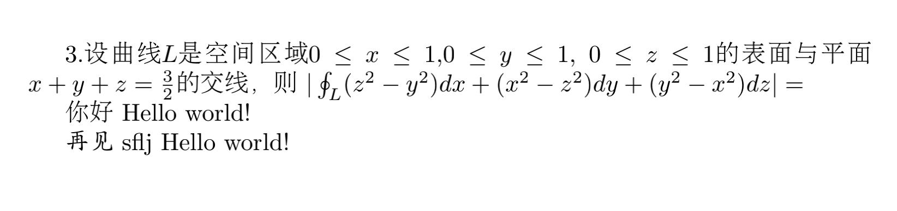
行间公式
\begin{equation*}
公式
\end{equation*}
使用美国助协会宏包 amsmath
一般来说行间公式比行内公式大一些
范例：
\documentclass{article}
\usepackage{amsmath}
\usepackage{CJKutf8}
\begin{document}
\begin{CJK}{UTF8}{gbsn}
\begin{equation*}
| \oint_L (z^2 - y^2) dx + (x^2 - z^2) dy + (y^2 - x^2) dz| =
\end{equation*}
\end{CJK}
\end{document}
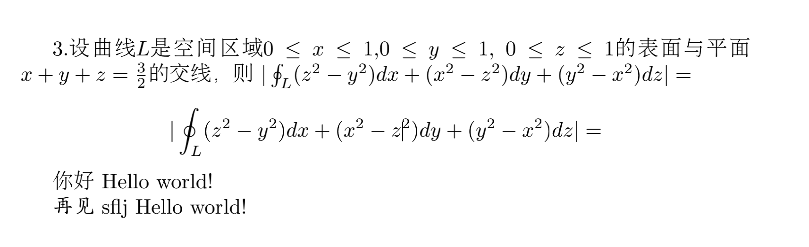
一个latex命令只有遇到空格或者数字或者标点符号才会终止识别
\le 小于 \pm 加号
加入空格
latex中加入空格
\,
\空格
\quad 大一点的空格
\qquad 再在一点的空格
使用场景：
- 积分变量和前面的隔开
- .被当成是句号，后面加一个真正的空格
- \quad 多个公式之间
范例：
\documentclass{article}
\usepackage{amsmath}
\usepackage{CJKutf8}
\begin{document}
\begin{CJK}{UTF8}{gbsn}
3.设曲线$L$是空间区域$0 \le x \le 1$,$0 \le y \le 1$, $0 \le z \le 1$的表面与平面
$x+y+z = \frac{3}{2}$的交线，则
$| \oint_L (z^2 - y^2) dx + (x^2 - z^2) dy + (y^2 - x^2) dz| = $
\begin{equation*}
| \oint_L (z^2 - y^2) dx + (x^2 - z^2) dy + (y^2 - x^2) dz| =
\end{equation*}
$dfasd\, fa\ sd\quad fa\qquad dfsf$
$\int_0^1 f(x)\, dx$
s.t. \ XXXXX, i.e.,
\begin{equation*}
f(n) = n (n+1),\quad n = 1, 2, 3, \dots.
\end{equation*}
\end{CJK}
\end{document}
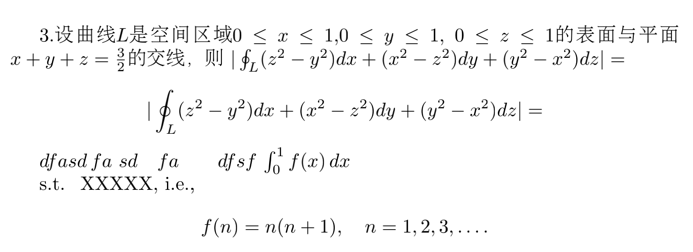
点与省略号
$\dot$ 普通的点，即句号 $\dots$ 省略号 $f(x_1, x_2, \cdots, x_n)$ 省略号在公式中间 $a \cdot b$ 数学中的点乘 目标：^ 下标：_ 下村中是一串字符用花括号括起来。如 $\lim_{ n \to \infty } na_n^2$ ，其中极限号放公式下面比较好，写在行间公式中。如想在行内公式实现可以加个limits，如$\lim\limits_{ n \to \infty } na_n^2$ 类似其它的符号： $\sum$, 求和号，$\int$, 积分号， $\prod$ 连乘号
范例：
\documentclass{article}
\usepackage{amsmath}
\usepackage{CJKutf8}
\begin{document}
\begin{CJK}{UTF8}{gbsn}
3.设曲线$L$是空间区域$0 \le x \le 1$, $0 \le y \le 1$, $0 \le z \le 1$的表面与平面
$x+y+z = \frac{3}{2}$的交线，则
$| \oint_L (z^2 - y^2) dx + (x^2 - z^2) dy + (y^2 - x^2) dz| = $
\begin{equation*}
| \oint_L (z^2 - y^2) dx + (x^2 - z^2) dy + (y^2 - x^2) dz| =
\end{equation*}
$dfasd\, fa\ sd\quad fa\qquad dfsf$
$\int_0^1 f(x)\, dx$
s.t. \ XXXXX, i.e.,
\begin{equation*}
f(n) = n (n+1),\quad n = 1, 2, 3, \dots.
\end{equation*}
$\dot$, $\dots$, $f(x_1, x_2, \cdots, x_n)$, $a \cdot b$
$\lim_{ n \to \infty } na_{n}^2$
$\lim\limits_{ n \to \infty } na_{n}^2$
\begin{equation*}
\lim_{n \to \infty } na_{n}^2
\end{equation*}
$\sum$, 求和号，$\int$, 积分号， $\prod$ 连乘号
\begin{equation*}
\int_{ \alpha }^{ \beta } f'( nx - \frac{1}{x} ) \, dx
\end{equation*} 积分号，积分下限是alpha，积分上限是 beta，f'()求导，
\end{CJK}
\end{document}
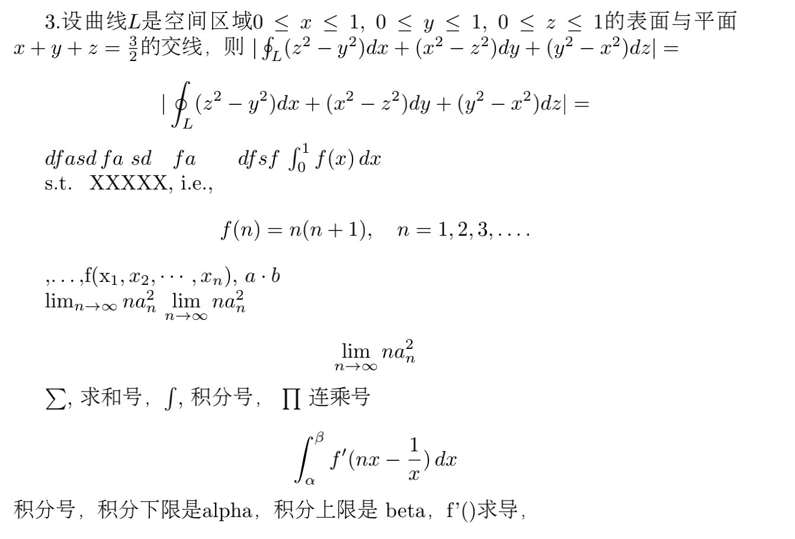
根号和分式
- 分式：\frac{ 分子 }{ 分母 }
- 根号：\sqrt{ xxx }
- 高次根号：\sqrt[]{xxx} 如，开10次根号2，\(\sqrt[ 10 ]{2}\)
- 高次根号：\sqrt[]{xxx} 如，开10次根号2，\(\sqrt[ 10 ]{2}\)
范例：
\documentclass{article}
\usepackage{amsmath}
\usepackage{CJKutf8}
\begin{document}
\begin{CJK}{UTF8}{gbsn}
\begin{equation*}
\int_{ \alpha }^{ \beta } f'( nx - \frac{1}{x} ) \, dx
= \int_{ \alpha - \frac{1}{ n\alpha } }^{ \beta - \frac{1}{ n \beta } }
f'(ny) x'(y) \, dy
\end{equation*}
$\frac{ aaaa }{ bbbb }$
$\sqrt{ 2 }$, $\sqrt[ 10 ]{2}$
\begin{equation*}
x_{1,2} = \frac{ -b \pm \sqrt{ b^2 - 4ac } }{ 2a }
\end{equation*}
\end{CJK}
\end{document}
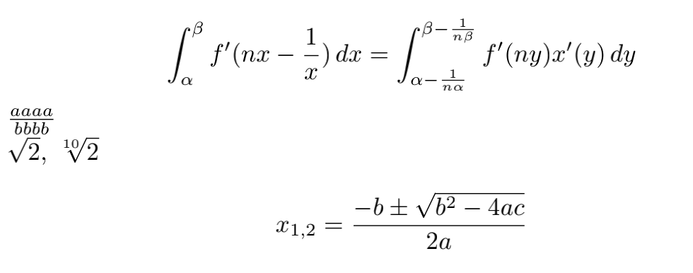
数学函数
- sin 三角反正弦函数
- cos 三角余弦函数
- log 对数
- ⊃ 上阕
- inf 下阕
- max 最大值
范例：
\documentclass{article}
\usepackage{amsmath}
\usepackage{CJKutf8}
\begin{document}
\begin{CJK}{UTF8}{gbsn}
$\sin \frac{\pi}{2}$, $\sin$, $\cos$, $\log$, $\sup$, $\inf$, $\max$
$\inf\limits_{x \in A} f(x)$
\end{CJK}
\end{document}
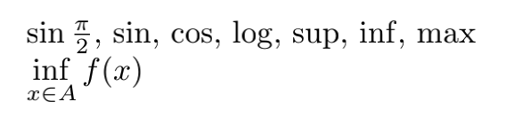
括号
- () 圆括号
- [] 方括号
- \{\} 花括号
调整括号大小：
- \big 用在迭代2个函数。如，\(f(f(x))\), \(f \big( f(x) \big)\)
- \Big
- \bigg
- \Bigg
- \| 显示双 ||
范例：
\documentclass{article}
\usepackage{amsmath}
\usepackage{CJKutf8}
\begin{document}
\begin{CJK}{UTF8}{gbsn}
$(x)$, $[y]$, $\{ a_n \}$
\begin{equation*}
f(x_1, x_2, \cdots, x_n) = \sum_{ i = 1 }^n
\big( x_i - \frac{ x_1 + x_2 + \cdots + x_n }{n} \big)^2
\end{equation*}
$\big( \Big( \bigg( \Bigg($
$f(f(x))$, $f \big( f(x) \big)$
$\Big\{ \frac{1}{n} \Big\}$
$|x|$, $\big| \frac{1}{x} \big|$
$\|x\|$, $\big\| \frac{1}{x} \big\|$
\end{CJK}
\end{document}
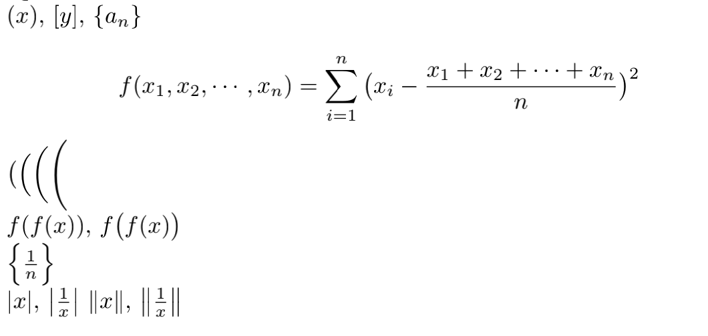
重音符号
- \bar{x} 字符上加横线。字符串上加 \overline{xxxx}
- \vec{x} 字符上加箭头。
- ~{x} 字符上加波浪线。字符串上 \widetilde{xxx}
- \doc{x} 字符上加点
单字符修饰：
- \"{x} 字母上加两点
- \'{x}
\documentclass{article}
\usepackage{amsmath}
\usepackage{CJKutf8}
\begin{document}
\begin{CJK}{UTF8}{gbsn}
\begin{equation*}
\bar{x} = \frac{1}{n} \sum_{i = 1}^n x_i
\quad \vec{x}, \tilde{x}, \dot{x}, \quad
\overline{xxx}, \widetilde{xxxx}
\end{equation*}
H\"{o}lder Fr\'echet
\end{CJK}
\end{document}
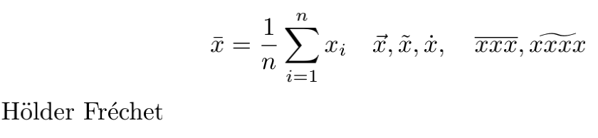
数学/文本字体
- \mathbf {R} \mathbb{R} 用实体的R或者空心的R表示实数
- 使用\mathbb 需要在文件开头加上 amssymb包，获得更多字体和数学环境的支持
- 多个字符的话，直接放花括号中
- 使用\mathbb 需要在文件开头加上 amssymb包，获得更多字体和数学环境的支持
- \textbf{ 这是一句中文} 文本模式中的粗体，表示强调
- \textit{xxxx} 英文中的斜体
\documentclass{article}
\usepackage{amsmath,amssymb}
\usepackage{CJKutf8}
\begin{document}
\begin{CJK}{UTF8}{gbsn}
$R$, $\mathbf {R}$, $\mathbb {R}$, $\mathbf{R JKKKLL}$, $\mathbb R DFELJL$
\textbf{ 这是一句中文}, faafsfl \textit{lksjldjf}
\end{CJK}
\end{document}
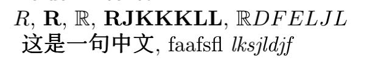
常见帮助文档
- 一份不太简短的latex2介绍： https://github.com/CTeX-org/lshort-zh-cn/releases
- 超详细资料：The Comprehensive LATEX Symbol List ：https://www.ctan.org/pkg/comprehensive
- latex mathematical symbols: https://www.cmor-faculty.rice.edu/~heinken/latex/symbols.pdf
- 个人常用的 只有4页，覆盖平时95%的常用符号
- 个人常用的 只有4页，覆盖平时95%的常用符号
LATEX Mathematical Symbols
1 Greek and Hebrew letters
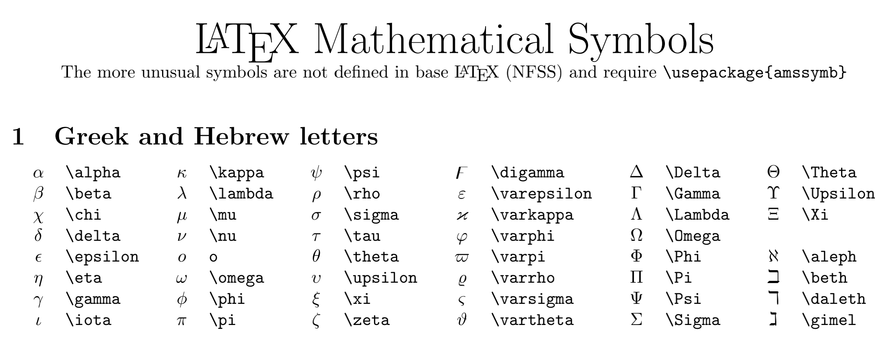
2 LATEX math constructs
3 Delimiters
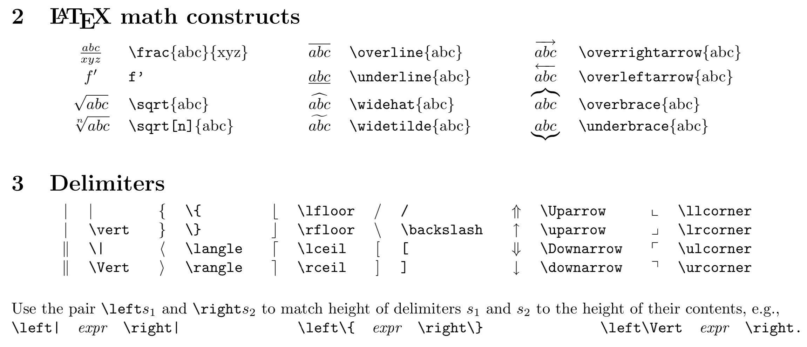
4 Variable-sized symbols (displayed formulae show larger version)
5 Standard Function Names
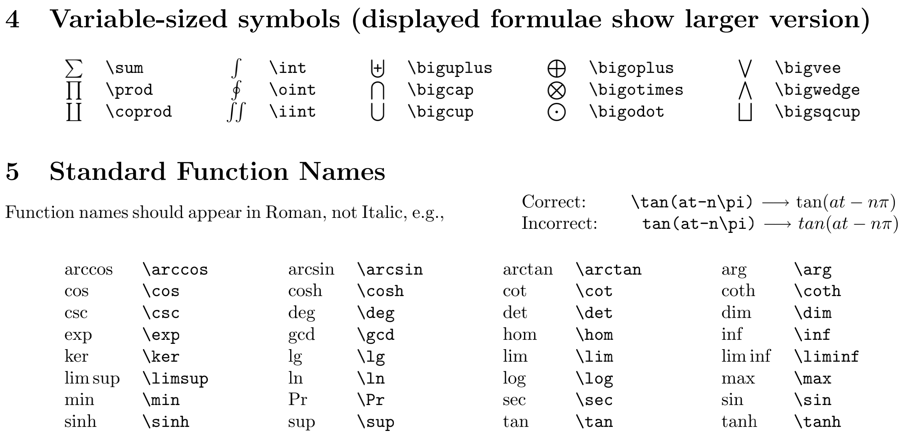
6 Binary Operation/Relation Symbols
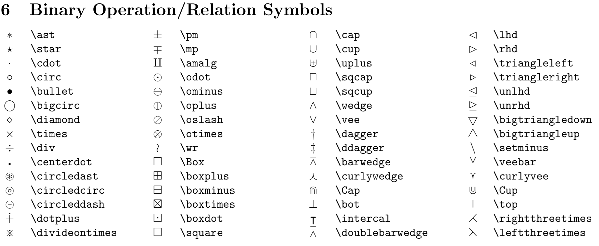
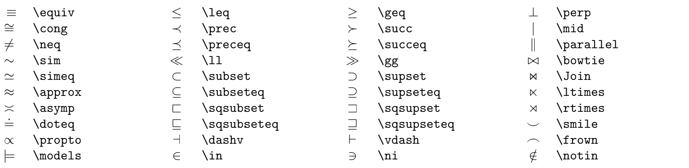
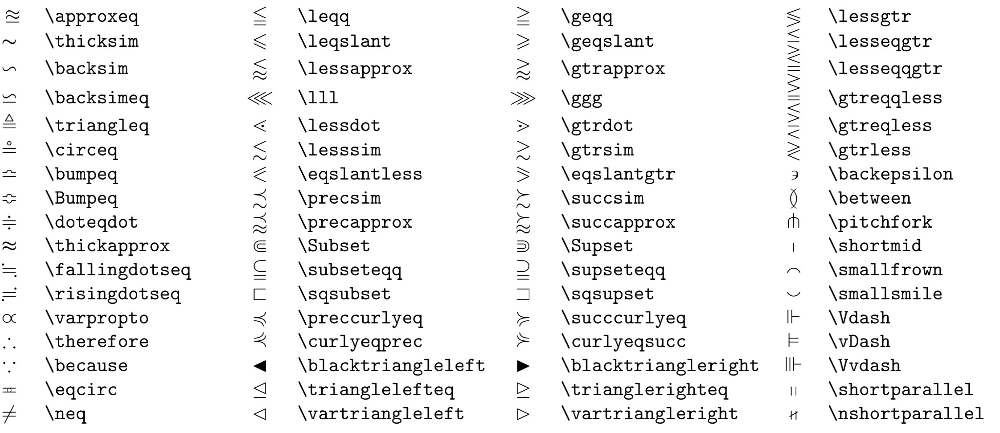
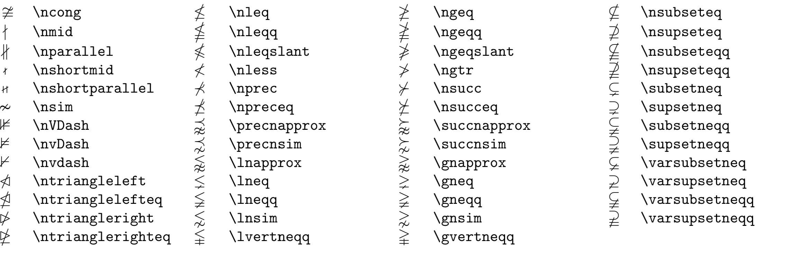
7 Arrow symbols
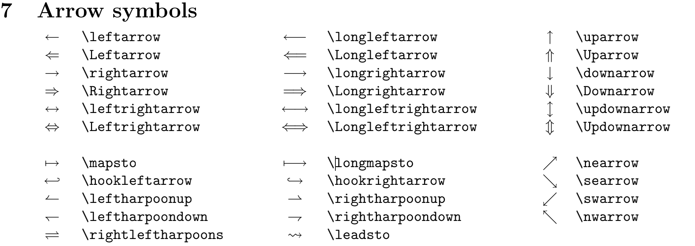
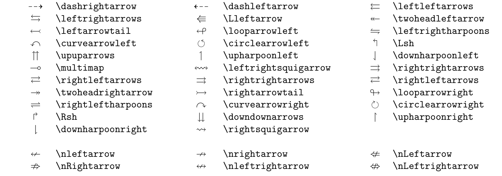
8 Miscellaneous symbols
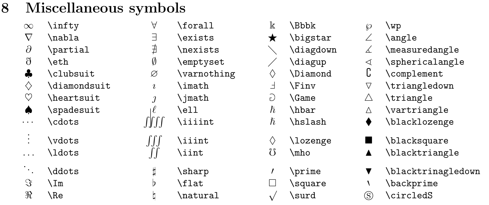
9 Math mode accents
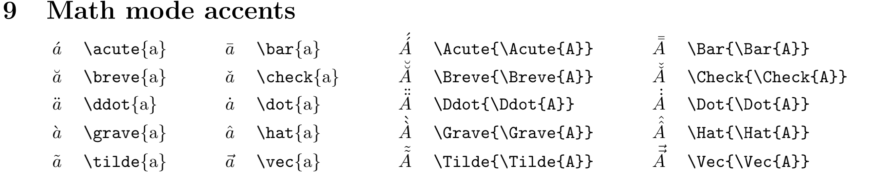
11 Other Styles (math mode only)
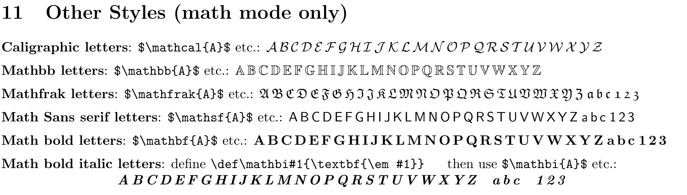
12 Font sizes
13 Text Mode: Accents and Symbols
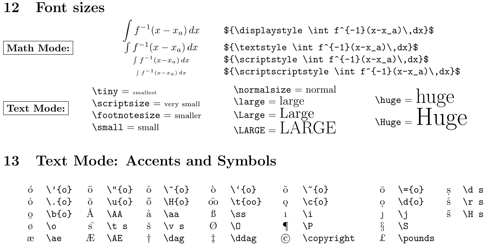
TeX文档结构
标题、作者、加入章节、加入目录等。
\begin{document} 之前的是导言区（preamble），设置文档参数
\begin{document} 之后的是正文，正文中内容才会输出到pdf文档中
标题、作者和日期
标题
在导言区加入 `\title{标题名称}`，然后在正文中加入 \maketitle
多行标题需要在标题之间加双斜线\\，双斜线也可以用在正文中表示强制换行
范例：
\documentclass{article}
\usepackage{amsmath, amssymb}
\usepackage{CJKutf8}
\title{我是标题 \\ 第二行标题}
\begin{document}
\begin{CJK}{UTF8}{gbsn}
\maketitle
你好呀
你\\好\\呀
\end{CJK}
\end{document}
作者
在导言区插入作者，\author{ 作者1 \and 作者2 }
日期
在导言区插入日期，默认使用当前时间
\date{ 5月1日 }
\date{} 不显示日期行
文档类型从article改为书籍book，\documentclass{book} 标题、作者、日期就会单独一页。
插入章节
需要在 \maketitle 后插入
- \section{第一个小标题}
- \subsection{子标题}
- \subsubsection{子标题的子标题}
- \chapter{第一章节} 章节的标题需要在文档为书籍book中使用
插入的章节被自动加上序号
范例：
\documentclass{article}
\usepackage{amsmath, amssymb}
\usepackage{CJKutf8}
\title{我是标题 \\ 第二行标题}
\author{ 作者1 \and 作者2 }
\date{}
\begin{document}
\begin{CJK}{UTF8}{gbsn}
\maketitle
\section{第一个小标题}
你好呀
\section{第二个小标题}
$\lim\limits_{n \to \infty } na_n^2$
\subsection{子标题}
$\sqrt{2}$
\subsubsection{子标题}
$\sin \frac{\pi}{2}$
\end{CJK}
\end{document}
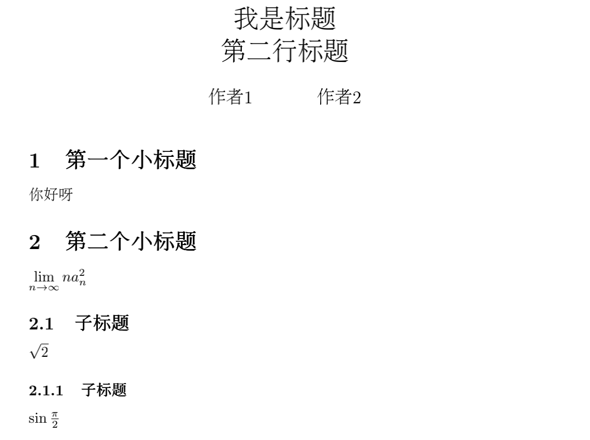
目录和书签
目录
正文中加入
\tableofcontents
需要经过2次编译，第一次在目录下生成`文件名.toc`文件，第二次编译引用toc文件生成带目录的pdf
范例：
\documentclass{article}
\usepackage{amsmath, amssymb}
\usepackage{CJKutf8}
\title{我是标题 \\ 第二行标题}
\author{ 作者1 \and 作者2 }
\date{}
\begin{document}
\begin{CJK}{UTF8}{gbsn}
\maketitle
\tableofcontents
\section{第一个小标题}
你好呀
\section{第二个小标题}
$\lim\limits_{n \to \infty } na_n^2$
\subsection{子标题}
$\sqrt{2}$
\subsubsection{子标题}
$\sin \frac{\pi}{2}$
\end{CJK}
\end{document}
红包-目录超链接
在导言区加
\usepackage{hyperref}
可以看到目录周围用红框框起来了，点一下自动跳到所在标题
outline 模式及 AucTex 简介
outline 模式
开启outline模式：
- 按下alt+x
- 提示符处输入 outline-minor-mode ，回车
可以从emacs菜单栏看到多了个 Outline 菜单，同时状态栏也多了个Outl字符。
选择任意点击一个，比如，状态栏点击Outl：
- Hide Body 只显示标题
- Show Entry 展开折叠的内容
emacs 插件包 AucTeX
emacs 插件 auctex 可以帮助我们更好的编辑 latex 文档。
安装方法1：
- 按下 Alt+x 输入 package-install 回车
- 输入 auctex，回车
重新登录 emacs 后，可以看到菜单栏中多出了 Preview 、Latex、Comamand 菜单；状态栏多了个P对就菜单栏的Preview。
- auctex 中编译 tex 文件
C-c C-c 输入 LaTex 回车编译(此时使用了auctex的编译)
- 输入L tab补全 LaTeX 回车。 auctex会自动选择对应的编译命令编译文件
若编译出现错误，使用 C-c ` 查看错误
C-c C-c 输入 View
- 按TAB 选中 Latex 默认从本地打开pdf文件
- 输入L tab补全 LaTeX 回车。 auctex会自动选择对应的编译命令编译文件
- auctex 插入LaTex宏命令
插入LaTeX命令：
C-c 回车 输入命令名称 输入命令参数
范例：
documentclass:
- C-c 回车
- 输入命令名称，如：\document 按tab 补全。
- 输入命令参数。如，根据提示输入文档类型article和属性draft，\documentclass[draft]{article}
usepackage:
- C-c 回车
- 输入\usepackage 回车，如输入 amsmath 回车
- 输入命令参数，这里直接回车
title:
- C-c 回车
- 输入\title 回车，如输入 xxxx 回车
- 输入命令参数，这里直接回车
author:
- C-c 回车
- 输入\author 回车，如输入 user1 \and user2 回车
- 输入命令参数，这里直接回车
maketitle 构建主题
tableofcontents 目录
插入环境：
C-c C-e 输入环境名称
范例：
begin-end
- C-c C-e
- 输入要插入的环境，如：document 回车，会自动填写\begin{document} \end{document}
插入章节
C-c C-s 选择章节层次 输入章节名称
范例：
section
- 按 C-c C-s
- 选择章节层次
- 输入章节名称 如 \section{first title}
范例：tex文件
\documentclass{article} \usepackage{amsmath} \title{This is a title} \author{user1 \and user2} \date{} \begin{document} \maketitle{} \tableofcontents{} \section{First title} \subsection{lalf} s.t. \ XXXXX, i.e., \begin{equation*} f(n) = n (n+1),\quad n = 1, 2, 3, \dots. \end{equation*} $\cdot$, $\dots$, $f(x_1, x_2, \cdots, x_n)$, $a \cdot b$ $\lim_{ n \to \infty } na_{n}^2$ $\lim\limits_{ n \to \infty } na_{n}^2$ \begin{equation*} \lim_{n \to \infty } na_{n}^2 \end{equation*} \end{document} - C-c 回车
交叉引用
小技巧-交换Ctrl键与Caps键
因为在emacs中会用到大量的ctrl键，因此需要把 Ctrl键与Caps键进行交换
windows
- 打开注册表编辑器：
- 右键点击开始菜单运行(run)-> regedit 或者在搜索栏中搜索registry editor
- 右键点击开始菜单运行(run)-> regedit 或者在搜索栏中搜索registry editor
- 找到注册表路径：HKEY_LOCAL_MACHINE\SYSTEM\CurrentControl\SetIControl\KeyBoard Layout
- 空白处右键新建二进制文件，文件名为Scancode map
- 右键文件选择编辑
- 空白处右键新建二进制文件，文件名为Scancode map
在Scancode map输入如下代码：
00 00 00 00 00 00 00 00 03 00 00 00 1D 00 3A 00 3A 00 1D 00 00 00 00 00
重启电脑就可以了
交叉引用
显示公式编号
\begin{equation}
xxxx
\end{equation}
插入交叉引用:
- \label{xxx}： 给公式自定义一个标签
- \ref{xxx}这是个说明：引用标签，并给出说明
\begin{equation}\label{eq:1}
xxxx
\end{equation}
(\req{eq:1})这是个方程
需要编译2次才能显示。
范例：
\documentclass{article}
\usepackage{amsmath, amssymb}
\usepackage{CJKutf8}
\usepackage{hyperref}
\title{我是标题 \\ 第二行标题}
\author{ 作者1 \and 作者2 }
\date{}
\begin{document}
\begin{CJK}{UTF8}{gbsn}
\maketitle
\tableofcontents
\section{第一个小标题}
你好呀
\section{第二个小标题}
\begin{equation}\label{eq:1}
\lim\limits_{n \to \infty } na_n^2
\end{equation}
$\int_0^1 f(x)\, dx$
\begin{equation}
| \oint_L (z^2 - y^2) dx + (x^2 -z^2) dy + (y^2 - x^2) dz| =
\end{equation}
(\ref{eq:1})这是个方程
\subsubsection{子标题}
$\sin \frac{\pi}{2}$
\end{CJK}
\end{document}
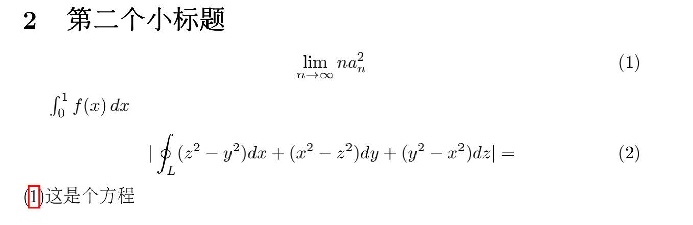
插入章节、页码编号
标签规范
- 最好用冒号分隔
- section的标签：sec:xx
- 公式的标签：eq:xxx
在章节后打上对应标签 \label{sec:xxx}
页码编号\pageref{xxx}
范例：
\documentclass{article}
\usepackage{amsmath, amssymb}
\usepackage{CJKutf8}
\usepackage{hyperref}
\title{我是标题 \\ 第二行标题}
\author{ 作者1 \and 作者2 }
\date{}
\begin{document}
\begin{CJK}{UTF8}{gbsn}
\maketitle
\tableofcontents
\section{第一个小标题}
你好呀
\section{第二个小标题}\label{sec:root}
\begin{equation}\label{eq:1}
\lim\limits_{n \to \infty } na_n^2
\end{equation}
$\int_0^1 f(x)\, dx$
\begin{equation}
| \oint_L (z^2 - y^2) dx + (x^2 -z^2) dy + (y^2 - x^2) dz| =
\end{equation}
第\pageref{eq:1}页中\ref{sec:root}节中的(\ref{eq:1})这是个方程
\subsubsection{子标题}\label{sec:t}
$\sin \frac{\pi}{2}$
\end{CJK}
\end{document}
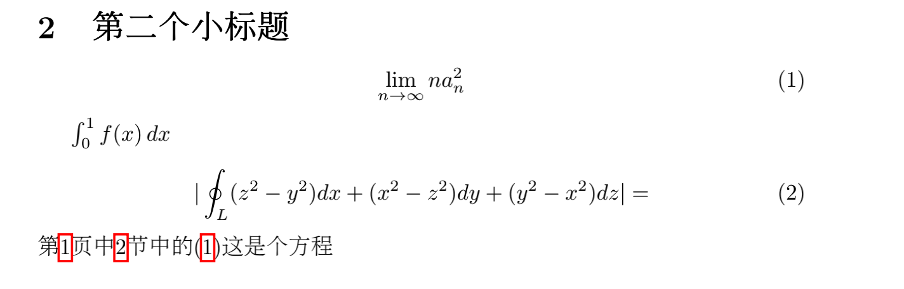
列表、表格与图片环境
环境插入命令
\begin{环境名}
\end{环境名}
列表环境
itermize无序列表
\begin{itemize}
\item 第一条
\item 第二条
\item 第三条
\end{itemize}
enumerate带编号列表
嵌套的子列表编号从字母a开始
\begin{enumerate}
\item 第一条
\item 第二条
\item 第三条
\begin{enumerate}
\item 第一
\item 第二
\end{enumerate}
\end{enumerate}
description关键字环境
\begin{description}
\item[关键字1]
\item[关键字2]
\end{description}
列表的交叉引用
标签一般用 \label{it:xxx}
引用：(\ref{it:xxx})
插入表格
format 中可用的字符：
- r：左对齐
- l：左对方
- c：居中
- |：插入列分隔符
\begin{tabular}{r|cc}
$k$ & $0$ & $1$ \\ \hline
$P(\xi = k)$ & $p$ & $1-p$
\end{tabular}
注意事项：
- 列之间以 & 分隔
- 不能漏掉行内公式的$…$
- 行尾换行
- 行尾用 \hline 添加横线
表格内
- 有更多的属性就需要把tabular环境放入table环境中，table环境会占据页面中间的位置
- \label{xxx} 添加标签
- \caption{xxx} 添加标题
- \centering 页面居中表格
表格在pdf出现的位置
- [b] 置于pdf的底部，如 \begin{table}[b]。一般不用设置，程序会自动设置一个比较好的
范例：
\begin{table}[b]
\centering
\begin{tabular}{r|cc}
$k$ & $0$ & $1$ \\ \hline
$P(\xi = k)$ & $p$ & $1-p$
\end{tabular}
\caption{Bernoulli随机变量的分布列}
\label{tab:1}
\end{table}
表\ref{tab:1}是Bernoulli随机变量的分布。
不让表格在页面上下浮动可以将tabular放到center环境中。
\begin{center}
\begin{tabular}{|r|cc|} \hline
$k$ & $0$ & $1$ \\ \hline
$P(\xi = k)$ & $p$ & $1-p$ \\ \hline
\end{tabular}
\end{center}
导入Excel表格
- 把Excel保存为.csv文件
- 把.csv文件内容复制到emacs中
- 把","替换成&，emacs中选中内容使用alt+%
- 用正则表达式替换在行末加上\\ \hline
- Alt+ctrl+%：$ –> \\\\ \\hline
- 在emacs中 2个\\斜杠代表一个斜杠
- Alt+ctrl+%：$ –> \\\\ \\hline
插入图片
- 在导言区调用宏包 graphicx
- \includegraphics{文件名} 插入图片
- [width=?\textwidth] 调整宽度
与表格一样，给图片加上标签和标题需要把它放到一个环境中，figure
- \caption{xxx} 标题
- \label{xx} 标签
- \centering 居中
- 两个并排的图片，放在一个环境里，调整图片宽度使得它们想加小于1就可以了。
\begin{center}
\includegraphics[width=0.6\textwidth]{1.png}
\end{center}
\begin{figure}
\includegraphics[width=0.6\textwidth]{1.png}
\caption{图片}
\label{fig:fitting}
\end{figure}
\begin{figure}
\includegraphics[width=0.45\textwidth]{1.png}
\includegraphics[width=0.45\textwidth]{2.png}
\caption{图片}
\label{fig:fitting}
\end{figure}
插入tikz
导言区插入宏包 tikz，\usepackage{tikz}
\begin{figure}
\centering
\begin{tikzpicture}
\draw (0,0) circle [radius = 1];
\end{tikzpicture}
\caption{圆}
\label{fig:circle}
\end{figure}
小技巧-用draft选项减少编译时间
\documentclass[draft,UTF8]{article}
不会真正的插入图片。
进阶技巧
区域选择与操作
区域编译及注释
emacs 中，鼠标选中区域
C-c C-r 编译区域
对比：
C-c C-c 编译全文件
(r = region)
范例：
鼠标选中区域 C-c C-r 回车，默认开始编译，并生成一个 _region_.pdf 文件 C-c C-r 回车，默认View，打开pdf文件
常用选定区域的命令
- C-c * 选中当前章节。需要有auctex包
- C-c . 选中当前环境。需要有auctex包，在行间公式中特别有用
- C-c ; (取消))注释。需要有auctex包。手动注释是在要注释的位置前加 % 百分号
emacs 中选中区域
方法1：拉去鼠标左键
在 emacs 中一个区域的范围是由2个点决定的。第一个点是标记(mark)，任何在标记和光标之间的东西都是区域的一部分。在状态栏下面的minibuffer中会有提示信息"Mark set" 。即使这个区域的高亮消失了，那个标记还会存在在那里，还是能对标记和光标之间的内容进行操作。
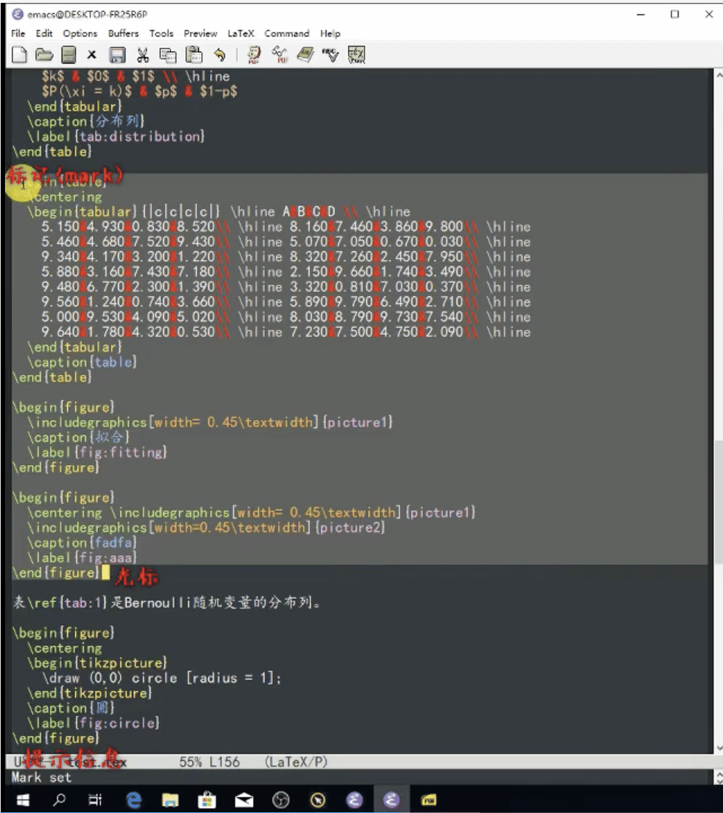
方法2：Shift + 方向键
方法3：左键点击标记位置，右键点击光标位置
方法4：
- 激活标记：C-@ 或者 C-空格
- 用方向键/Emacs快捷键移动光标 或者 C-n 向下移动光标
C-x C-x 交换标记和光标的位置
在latex常用的快捷键组合
- (章节末)输入
- C-c * 选中章节
- C-c C-r，回车，编译章节
- C-x C-x 光标回到章节末
- 继续输入
C-x Tab: 调整区域缩进
- ->：右移1个空格
- Shift + -> ：右移8个空格(= tab)
- <-：左移1个空格
- Shift + <=：左移8个空格(=tab)
中断与撤消
C-g 中断当前命令
C-/ 撤消
恢复的话需要撤消我们的撤消：
- 中断撤消：如按一下空格中断撤消
- C-/ 就会是撤消之前撤消
emacs 中的光标移动
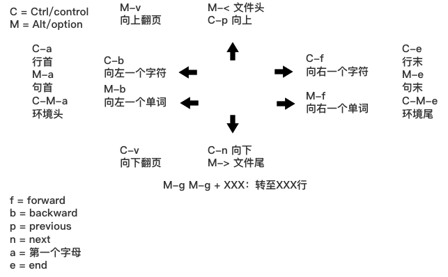
选定全文件
- 方法1：
- M-< 跳到文件头
- C-@ 设定标记
- M-> 跳到文件尾
- M-< 跳到文件头
- 方法2：
- C-x h 即mark-whole-buffer
- C-x h 即mark-whole-buffer
emacs 中的剪切、复制与粘贴
C-w 剪切
M-w 复制
C-y 粘贴
M-y 从剪贴析中选择
剪切(删除行)
C-k 剪切光标到行末
C-S-退格 剪切光标所在行 S 为Shitf 键。等同于 C-a C-k C-k
用 C-k 和 C-S-退格删除的内容会保留在剪贴板中，可以用C-y/M-y进行粘贴
剪切3行的三种方法
- 方法1：C-a (至行首)，C-空格 (标记)，
- C-n, C-n, C-e (移动光标)，
- C-w 剪切区域
- C-n, C-n, C-e (移动光标)，
- 方法2：C-a (至行首)，连续按 C-k
- 方法3：连续按 C-S-退格
单词操作
- 退格：向左删除字符
- C-退格：向左删除单词(保存到剪贴板)
- C-d/Delete：向右删除字符
- Alt-d：向右删除单词(保存到剪贴板)
cdLaTeX简介
cdLaTex的优势：
- 快捷键精准快速插入数学符号
- Tab自动补全命令/环境
- 以上2点可以自定义扩展
安装
windows:
- 找到C:\Users\用户名\AppData\Roaming
- 准备好cdlatex.el 网址: https://raw.githubusercontent.com/cdominik/cdlatex/master/cdlatex.el
- 将cdlatex.el放入`./emacs.d/lisp` 目录下，提前创建好目录
- 修改`~/.emacs`文件，后重新打开emacs服务
在emacs 配置文件中添加如下内容
(add-to-list 'load-path "~/.emacs.d/lisp") (require 'cdlatex) (add-hook 'LaTeX-mode-hook 'turn-on-cdlatex)
上述意思为，加载配置文件目录，载入cdlatex，打开latex文件时打开cdlatex
再打开latex文件时，状态栏中多出了CDL字符串。
"$"、上下标、括号自动补全
- 输入一个\(自动变为2个\)
- 自动匹配的是上下标+{}
- 如果在只有一个字符的{x}里按tab，{}消失
- {}里是多个字符，按tab跳出{}
- 如果在只有一个字符的{x}里按tab，{}消失
数学符号快捷输入
按反引号弹出数字符号窗口，再输入对应的英文字母
- 按2次反引号打开第二层列表，不常用符号
- 按3次反引号条形第三层列表
注：反引号 "`" 是数字1左边的键
tab自动补全命令
#分式 根号 $fr按tab$ $sq按tab$ #章节 子章节 子子章节 sn按tab ss sss
C-c ? 可以看到帮助信息，可以看到tab能补全的命令
- TEXT可以在文本中插件，MATH可以在数学公式中插入
数学字体的快捷输入
# 粗体R $R按单引号$ 粗体对应的快捷键是b \mathbf $\mathbf{R}$
把多个单词放入 \textbf命令中的方法：
- 方法1：空白处输入" '+b "，然后输入单词
- 方法2：在最后一个单词后输入 "M+数字 '+b"
2个输入补全
Fourier变换及逆变换
gat*按tab补全，\begin{gather*}
f按单引号，按^，\hat{f}
ali*按tab补全
\begin{gather*}
\hat{f} (\xi) = \int e^{ 2\pi i x \cdot \xi } dx\, \quad \xi \in \mathbf{R}, \\
\check{\varphi}(x) = \int e^{-2 \pi i \xi \cdot x } \varphi(\xi) \, d\xi, \quad x \in \mathbf{R}
\end{gather*}
\begin{align*}
\nabla \cdot \mathbf{E} = \frac{\rho}{ \varepsilon_0}
\end{align*}
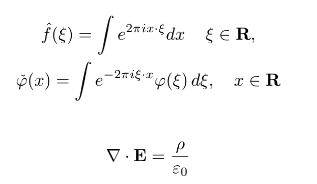
RefTex之交叉引用
reftex是emacs中自带管理交叉引用的包。
打开reftex: M-x reftex-mode
可以看到状态栏多个了个Ref，菜单栏多了Ref菜单。
设置打开tex文件开启reftex，在emacs配置文件`~/.emacs`添加以下内容
(add-hook 'LaTeX-mode-hook 'turn-on-reftex)
添加标签
添加标签快捷键
- 方法1：lbl + tab 需要安装cdlatex包
- 方法2：C-c (
列表、数学分式中：自动编号
章节、图表等：根据上下文或自行输入
添加引用
添加引用快捷键
- 方法1：ref + tab 需要安装cdlatex包
- C-c ) 注 C-c ( 是添加标签
自定义关键字(magic word)：
M-x customize-variable 回车 reftex-label-alist 回车
cdLaTeX自定义设置
三类快捷命令：
- 反引号"`"输入数学符号
- 单引号"'"调整字体/重音符号
- Tab自动补全，如输入分式，fr按tab；插入环境，equ按tab；插入列表环境，enu按tab
增改反引号对应数学符号快捷键
修改方法：
M-x customize-variable 回车 cdlatex-math-symbol-alist
添加或者覆盖已有的快捷键，点INS按钮：
Character: x 设定哪个快捷键 Repeat: 替换内容
范例：0改为\varnothing, 把emptyset放第2层列表，修改完后按Apply and Save保存
Character: 0 Repeat: macro: \varnothing macro: \emptyset
设置界面也是一个buffer
按C-x b 可以跳回到刚刚的buffer(tex 文件)
使新设置生效的方法：
- 关闭emacs重新打开
- 关闭文件重新打开
- "刷新"文件 需要有auctex包
- 利用LaTeX菜单Multifile/Parsing中"Reset buffer"命令 或者 按C-c C-n
- 利用LaTeX菜单Multifile/Parsing中"Reset buffer"命令 或者 按C-c C-n
增改单引号对应(数学)字体快捷键
M-x customize-variable 回车 cdlatex-math-modify-alist
范例：单引号按t，修饰数学符号
Key character : t 关键字 TeX macro inside math mode: Value Menu String: \mathbb 空心粗体，在数学环境中使用 TeX macro outside math mode: Value Menu String: 不填，表示在文本环境中没有 Type : Toggle Command 把修饰的符号放在花括号里 Remove dot in i/j: Toggle off (nil) 是否把i/j的点去掉 Italic correction: Toggle off (nil) 是否需要斜体 Key character : k TeX macro inside math mode: Value Menu String: \mathfrak 哥特体，在数学环境中使用 TeX macro outside math mode: Value Menu String: 不填，表示在文本环境中没有 Type : Toggle Command 把修饰的符号放在花括号里 Remove dot in i/j: Toggle off (nil) 是否把i/j的点去掉 Italic correction: Toggle off (nil) 是否需要斜体 State : EDITED, shown value does not take effect until you set or save it. List description of the LaTeX math accents. Hide See ‘cdlatex-math-modify-alist-default’ for an example. Any entries in this variable will be added to the default. Each element contains 6 items: 0. key: The character that is the key for a the accent. 1. mathcmd: The LaTeX command associated with the accent in math mode 2. textcmd: The LaTeX command associated with the accent in text mode 3. type: t if command with argument (e.g. \tilde{a}). nil if style (e.g. {\cal a}). 4. rmdot: t if the dot on i and j has to be removed. 5. it t if italic correction is required.
生效：C-c C-n 刷新
括号匹配
M-x customize-variable 回车 cdlatex-paired-parens
默认支持`$[{`，我们再添加一个圆括号匹配：
- 设置为 `$([{`
不需要刷新，立即生效。
自定义补全命令
C-c ?：打开tab补全命令帮助界面
补全命令-数学公式
M-x customize-variable-other-window 回车 cdlatex-command-alist
修改完后保存刷新，C-c C-n 刷新生效
在hook处理输入命令可以以下方法补全：
M-/：自动根据文本补全
多次M-/：在备选补全文本中选择
输入关键字big(按tab被替换成\big( \big
Keyword: big( 关键字 Decstring: insert \big( \big) 说明 Replacement: \big( \big 输入关键字再按tab被替换成的内容 Hook: ignore Arguments: nil Available in Text mode: Toggle off (nil) Available in Math mode: Toggle on (non-nil) 只在数学环境中生效
默认光标在尾部，指定光标位置:
Keyword: big( Decstring: insert \big( \big) Replacement: \big( ? \big Hook: cdlatex-position-cursor Arguments: nil
`?` 代表光标位置
一行写不下，C-j 换行
范例：其它补全
INS DEL List:
Keyword : Big(
Docstring :
Replacement: \Big( ? \Big
Hook : cdlatex-position-cursor
Arguments : nil
Available in Text mode: Toggle off (nil)
Available in Math mode: Toggle on (non-nil)
INS DEL List:
Keyword : big(
Docstring : insert \big( \big)
Replacement: \big( ? \big
Hook : cdlatex-position-cursor
Arguments : nil
Available in Text mode: Toggle off (nil)
Available in Math mode: Toggle on (non-nil)
INS DEL List:
Keyword : st
Docstring :
Replacement: \stackre{?}{}
Hook : cdlatex-position-cursor
Arguments : nil
Available in Text mode: Toggle off (nil)
Available in Math mode: Toggle on (non-nil)
INS DEL List:
Keyword : te
Docstring :
Replacement: \text{ ? }
Hook : cdlatex-position-cursor
Arguments : nil
Available in Text mode: Toggle off (nil)
Available in Math mode: Toggle on (non-nil)
补全命令-插入环境
方法1：
范例：操作equation*命令，设置在文本（text）中可用
INS DEL List:
Keyword : equ*
Docstring :
Replacement: \begin{equation*}
?
\end{equation*}
Hook : cdlatex-position-cursor
Arguments : nil
Available in Text mode: Toggle on (non-nil)
Available in Math mode: Toggle off (nil)
Keyword: equ*
Decstring:
Replacement:
Hook: cdlatex-environment
Arguments: ("equation*")
换行C-j
方法2： （推荐)
INS DEL List:
Keyword : equ*
Docstring :
Replacement:
Hook : cdlatex-environment
Arguments : ("equation*")
Available in Text mode: Toggle on (non-nil)
Available in Math mode: Toggle off (nil)
相当于 C-c (：cdlatex-environment（插入环境）
环境模板设置
像 enu 按tab 插入的环境模板不是自己想要的，这里就可以修改模板。
M-x customize-variable 回车 cdlatex-env-alist
自己写个模板覆盖自带的。
范例：修改enumerate模板，同时指定新项目的模板.
INS DEL :
ENVIRONMENT enumerate
ENVIRONMENT TEMPLATE
\begin{enumerate}
\item ?
\end{enumerate}
ITEM: Value Menu TEMPLATE
\item
- ? 问号表示指定光标位置
- 保存后，C-c C-n 生效。
- 输入enu按tab进入环境，在\item后按 it按tab展开为\item
AUTOLABEL 插入label标签
INS DEL :
ENVIRONMENT enumerate
ENVIRONMENT TEMPLATE
\begin{enumerate}
\item ?
\end{enumerate}
ITEM: Value Menu TEMPLATE
\itemAUTOLABEL ?
插入enumerate环境
\begin{enumerate}
\item
\item\label{item:3}
\item\label{item:4}
\end{enumerate}
范例：带换行的分类讨论的环境
INS DEL :
ENVIRONMENT cases
ENVIRONMENT TEMPLATE
\begin{cases}
？ &
\end{cases}
ITEM: Value Menu TEMPLATE
\\ ? &
INS
在equation环境插入cases:
\begin{equation*}
f(x)
\begin{cases}
1, & x = 0
\\ 2, & x = 1
\end{cases}
\end{equation*}
输入equ*按tab，插入模板环境 C-c { 输入cases 回车，it 换行插入内容
实例-方程组的快速插入
写补全命令：aali 自定义
INS DEL List:
Keyword : aali
Docstring :
Replacement: \left\{ \begin{aligned}
? & &&
\end{aligned}\right.
Hook : cdlatex-position-cursor
Arguments : nil
Available in Text mode: Toggle off (nil)
Available in Math mode: Toggle on (non-nil)
写aligned的模板
INS DEL :
ENVIRONMENT aligned
ENVIRONMENT TEMPLATE
\begin{aligned}
? & &&
\end{aligned}
ITEM: Value Menu TEMPLATE
\\ ? & &&
注：aligned和align类似。不同之处在于前者只能嵌套在别的数学环境中，后者是独立的数学环境。
\begin{equation*}
\left\{ \begin{aligned}
\partial_tu(t,x) & = \partial_{xxx}u(t,x), && x \in \mathbb{R}_+\\
u(0,x) & = u_0(x), && x \in \mathbb{R}_+\\
u(t,0) & = 0, && t \in \mathbb{R}_+.
\end{aligned}\right.
\end{equation*}
输入equ*按tab，输入aali按tab
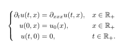
自定义定理环境
自定义定理环境
定理定义环境特点：
- 使用不同的字体
- 定理环境可以有自带的编号，并且可以用交叉引用的方式引用编号
使用包：
- 定理环境要使用 amsthm 宏包，在导言区加入
- C-c C-n 让 AucTeX 读取导言区
auctex包中快捷键：
导言区：
C-c 回车 \newtheorem
- 输入theorem 回车 latex文档中起的名字
- 第一个参数(Optional) Numbered like:，
- 第二参数可选用，
- 最后是在文档中显示的名字
正文：
C-c C-e 回车 输入theorem 插入定理
范例：插入一个定理引理
\documentclass{article}
\usepackage{amsmath, amssymb, amsthm}
\usepackage{CJKutf8}
\newtheorem{theorem}{定理}
\newtheorem{lemma}{引理}
\begin{document}
\begin{CJK}{UTF8}{gbsn}
\begin{theorem}
单调数列必有极限。
\end{theorem}
\begin{lemma}
任意数集必有上确界。
\end{lemma}
\end{CJK}
\end{document}
pdf显示内容
定理 1. 单调数列必有极限。 引理 1. 任意数集必有上确界。
定理引理使用不同的计数器。
如果要使用同一个计数器，就要在定义引理时使用第一个参数：
-C-c 回车 \newtheorem
- lemma 回车
- 第一个参数(Optional) Numbered like: theorem
\documentclass{article}
\usepackage{amsmath, amssymb, amsthm}
\usepackage{CJKutf8}
\newtheorem{theorem}{定理}
\newtheorem{lemma}[theorem]{引理}
\begin{document}
\begin{CJK}{UTF8}{gbsn}
\begin{theorem}
单调数列必有极限。
\end{theorem}
\begin{lemma}
任意数集必有上确界。
\end{lemma}
\end{CJK}
\end{document}
略
reftex 设置新的标签类型
略
所见即所得之Preview-latex
部分编译呈现，Preview-latex对应下方状态栏P的字符，来自AucTeX插件包。
生成预览快捷键前缘：C-c C-p
(p = preview)
清除预览快捷键前缀：C-c C-p C-c
(p = preview, c = clearout)
C-c C-p 后接：
- C-p (p = point) 当前位置。
- C-e (e = environment) 当前环境。 光标移进去就会展开数学公式
- C-s (s = section) 当前章节
- C-b (b = buffer) 当前缓冲区
- C-r (r = region) 当前区域
范例：选定区域预览
- C-c C-p C-s 相当于，先C-c * 选定当前章节，再C-c C-p C-r 预览区域
C-c C-p C-p 用法1： 预览整个文件
C-c C-p C-p 用法2： 选定区域后预览区域
C-c C-p C-p 用法3： 修改公式后重新生成预览。注意：光标要停留在公式内
M-x customize-variable 回车 preview-default-option-list
如果不想编译行章节标题，可以把sections勾掉。
不支持中文编译预览，需要安装 deps 版本的emacs
Outline Mode简介
主要功能：按latex 目录层次来折叠。
开启outline模式：
- 按下alt+x
- 提示符处输入 outline-minor-mode ，回车
可以从emacs菜单栏看到多了个 Outline 菜单，同时状态栏也多了个Outl字符。
选择任意点击一个，比如，状态栏点击Outl：
- Hide Body 只显示标题
- Show Entry 展开折叠的内容
修改快捷键
因为自带的快捷键太长
在~/.emacs中添加
- 把前缀快捷键改为C-o
- 自动加载outline-mode
- 自动折叠文档
(setq outline-minor-mode-prefix [(control o)]) (add-hook 'LaTeX-mode-hook 'outline-minor-mode) (add-hook 'LaTeX-mode-hook 'outline-hide-body)
重新打开emacs
常用命令
C-c = : (Reftex)打开目录
- C-o C-e show-entry：展开被折叠的文本
- C-o C-t hide-body：只保留标题
- C-o C-a show-all：展开全部文本
- C-o C-o hide-other：折叠除光标所在章节外其它章节
- C-o C-b/C-f：同级目录移动
- C-o C-q 显示最顶层目录。
- M-数字N C-o C-q 显示前N层目录。 注意 M-数字 = C-u 数字
- M-数字N C-o C-q 显示前N层目录。 注意 M-数字 = C-u 数字
- C-o C-^/C-v 上下移动整个章节
PDF预览正向与逆向搜索
C-c C-v：预览PDF（正向搜索：从源文件跳到PDF位置）
注：v = view 查看
在pdf中双击(逆向搜索：从PDF位置到源文件)
正向搜索
打开emacs配置文件：C-x C-f ~/.emacs 回车
;;下面代码放入.emacs文件中 (setq TeX-PDF-mode t) (setq TeX-source-correlate-mode t) (setq TeX-source-correlate-method 'synctex) (setq TeX-view-program-list '(("Sumatra PDF" ("\"C:/Program Files/SumatraPDF/SumatraPDF.exe\" -reuse-instance" (mode-io-correlate " -forward-search %b %n ") " %o")))) (add-hook 'LaTeX-mode-hook (lambda () (assq-delete-all 'output-pdf TeX-view-program-selection) (add-to-list 'TeX-view-program-selection '(output-pdf "Sumatra PDF"))))
修改 .emacs 后有2种生效方式：
- 重启emacs
- M-x load-file 回车
- C-c C-n 刷新
逆向搜索
打开sumatraPDF菜单，Settings –> Options 将下面内容复制到框中：
"C:/Program Files (x86)/Emacs26/bin/emacsclientw.exe" -n +%l "%f"
TeX-fold代码折叠
可以将latex中复杂的宏命令以及环境在编辑器中以折叠方式显示出来。
打开TeX-fold mode
- 方法1：M-x TeX-fold-mode
- 方法2：菜单"LaTeX -> Show/Hide -> Fold Mode"
- 方法3：C-c C-o C-f
C-c C-o C-b：折叠整个buffer
- C-c C-o：TeX-fold-mode的命令前缀
- C-b： b = buffer
打开emacs启动tex-fold mode，emacs配置文件 ~/.emacs 中添加
同时解决windows 下emacs显示unicode字符的卡顿问题，不让emacs在显示过程中清除缓存
(add-hook 'LaTeX-mode-hook 'TeX-fold-mode 1)
(setq inhibit-compacting-font-caches t)
加载配置文件:
- M-x load-file 回车 ~/.emacs
测试换字体不会出现卡顿：
- Options -> Set Default Font
TeX-fold mode 的快捷键
菜单 LaTeX -> Show/Hide 中查到。
打开/折叠章节：
- C-c * 选中章节
- C-c C-o C-r 折叠(区域)
- C-c C-o r 打开(区域)
- C-c C-o r 打开(区域)
TeX-fold mode 自定义设置
C-h v 变量名：获取一个变量的帮助信息
M-x customize-variable 回车 TeX-fold-type-list 可以查到有4种折叠类型。
- 对宏命令自定义： TeX-fold-macro-spec-list 变量
- 对环境自定义： TeX-fold-env-spec-list 变量
- 对数学符号自定义： LaTeX-fold-math-spec-list 变量
unicode 字符
输入unicode字符：
- 方法1：windows 找到字符映秀表，可以看到字符对应的unicode编码
- 方法2：C-x 8 回车 4位16进制编码 回车
特殊符号显示支持：
windows中使用 Cambria Math 字体，但中文显示就会有问题。
配置emacs 文件，汉字和数学符号显示不同的字体
;; 汉字默认字体为Kaiti(楷体)，可改为其它字体 (set-fontset-font "fontset-default" 'han "KaiTi") ;; 数学符号默认字体为Cambria Math (set-fontset-font "fontset-default" 'symbol "Cambria Math")
参考文献、多文件和排错
参考文献
如何添加参考文献
LaTeX参考文献引用一般是使用BibTex参考文献格式。BibTex首先要有bib文件
bib文件来源：
- 期刊网站上导出
- 文献管理软件导出
- 手动从菜单添加
bib文件格式:
@xxx 对应一个参考文献，可以是article文章、或者book书籍 #打开bib文件，生成bib模板：菜单 Entry-Types -> Article in Journal @Article{xxx标志, author = {}, title = {}, journal = {杂志名称}, year = {年份2023}, OPTkey = {}, OPTvolume = {}, OPTnumber = {}, OPTpages = {}, OPTmonth = {}, OPTnote = {}, OPTannote = {} }
C-c 回车：插入2个LaTeX宏命令
- \bibliographystyle{xxx} 引用文献的风格
- \bibliograph{xxx} .bib文件的文件名
重启emacs生效
插入参考文献：
- 方法1：cte 按tab
- 方法2：C-c [
所有的参考文献肯定包含字母a的，可以输入a 按tab补全，会弹出引用列表：
n (next) 向下移动 p (previous) 向上移动 空格 显示完整的bib项目 回车 确认引用 m (mark) 标记 u (unmark) 取消标记 a/A (all) 引用被标记文献 (多/单个\cite)
搜索参考文献：
- 可以用常用字符(如 "a")或能配符(如 ".") 达到显示全部文献效果
- 按 r 缩小搜索范围
- 用 && 分隔多个关键词。如， word1&&word2
C-c &: 显示所引用条目
如果找不到所引用的bib文件，可以让emacs扫一遍查找一下：
- 菜单栏Ref -> Parse Document -> Entire Document
生成参考文献
C-c C-c
生成参考文献需要4次编译：
1次LaTex，1次BibTeX，2次LaTeX
范例：
\documentclass{article}
\usepackage{amsmath, amssymb, amsthm}
\usepackage{CJKutf8}
\newtheorem{theorem}{定理}
\newtheorem{lemma}[theorem]{引理}
\begin{document}
\begin{CJK}{UTF8}{gbsn}
\begin{theorem}
单调数列必有极限。
\end{theorem}
\begin{equation*}
\left\{ \begin{aligned}
\partial_tu(t,x) & = \partial_{xxx}u(t,x), && x \in \mathbb{R}_+\\
u(0,x) & = u_0(x), && x \in \mathbb{R}_+\\
u(t,0) & = 0, && t \in \mathbb{R}_+.
\end{aligned}\right.
\end{equation*}
\cite{carter_signorino_2010}
\cite{test1,test2}
\cite{test1}\cite{test2}
\end{CJK}
\bibliographystyle{alpha}
\bibliography{myref}
\end{document}
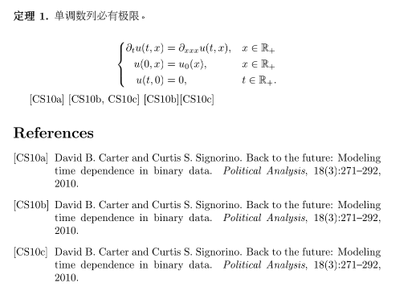
只希望在下面参考文献出现
\nocite{xx}
\nocite{*} 列出所有参考文献
清理编译产生的辅助文件
C-c C-c 回车 Clean 或者Clean All
多文件处理
引用其它latex文件：
- \input{Tex文件名}
引用的文件只有公式和环境，没有导言区等，编译时可以用：
- C-c _：指定主文件。可看到在文件最后有一些被注释的内容，告诉编译器主文件在哪
如果经常使用多文件，可在emacs配置文件添加如下内容：
;; 编译时，每次都询问主文件，而不是默认把当前文件作为主文件 (setq-default TeX-master nil)
局部变量使用utf-8编码，可在注释添加
%%% coding: utf-8
排错
C-c `：显示(下一个)错误
M-g p：显示上一个错误
M-x TeX-error-overview：显示所有错误
C-c C-t C-b 打开Bod Boxses 错误提示。排版问题
C-c C-t C-w 打开Warning错误提示
M-x customize-variable 回车 TeX-error-overview-open-after-Tex-run 设置为on：每次编译atex文件后自动显示所有错误窗口
特别篇-交换图表
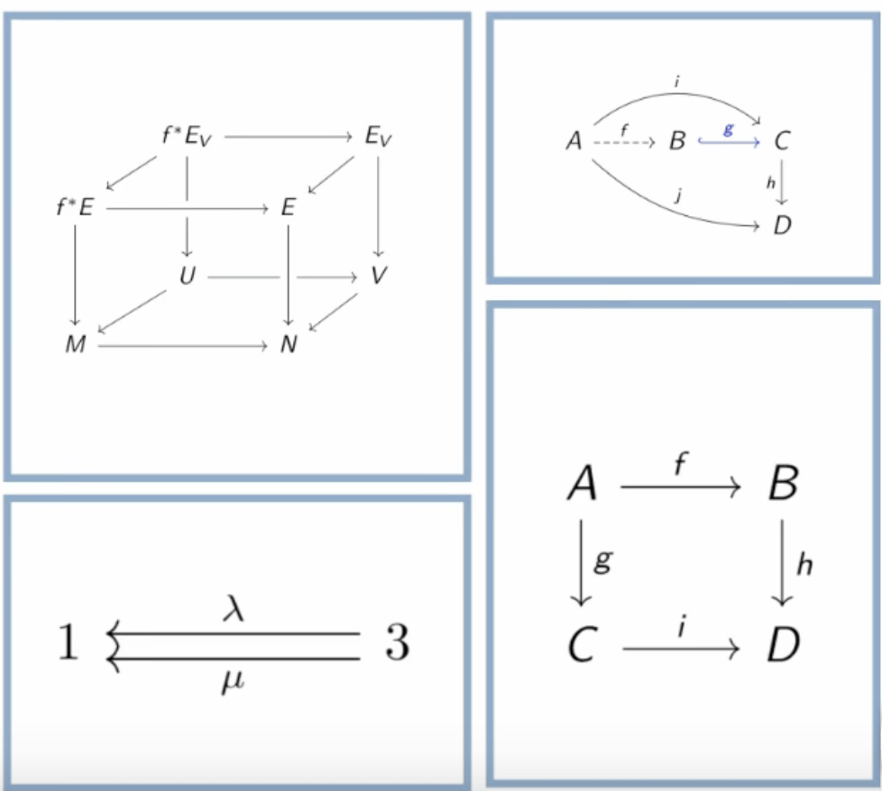
入门
这些交换图表用到的宏包：tikz
- 加载宏包： \usepackage{tikz,tikz-cd}
- 画布：外层equation环境，里层tikzcd环境
- 画点：仿照array环境
- 画箭头：语法：\arrow[options]或者\ar[options]
- Options:
- 一定要有！指到哪里：上u下d左l右r
- 可以有！加标签："f", "f"' 表示标签放在线条外面
- 一定要有！指到哪里：上u下d左l右r
- Options:
范例：生成画布
C-c 回车 usepackage 回车 <宏包名>
插入equation环境：
- equ* TAB
插入一般环境：
C-c C-e ENTER <环境名>
\documentclass{amsart}
\usepackage{tikz,tikz-cd}
\begin{document}
\begin{equation*}
\begin{tikzcd}
\end{tikzcd}
\end{equation*}
\end{document}
范例：画点、画箭头
编译： C-c C-c LaTeX
查看pdf：C-c C-v
自定义一个插入 \ar[] 的快捷键
M-x customize-variable-other-window 回车 cdlatex-command-alist
ar TAB ENTER
\documentclass{amsart}
\usepackage{tikz,tikz-cd}
\begin{document}
\begin{equation*}
\begin{tikzcd}
A \ar[r,"f"] \ar[d,"g"'] & B \ar[d,"h"] \\
C \ar[r,"i"'] & D
\end{tikzcd}
\end{equation*}
\end{document}
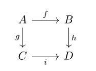
注入灵魂-调整箭头
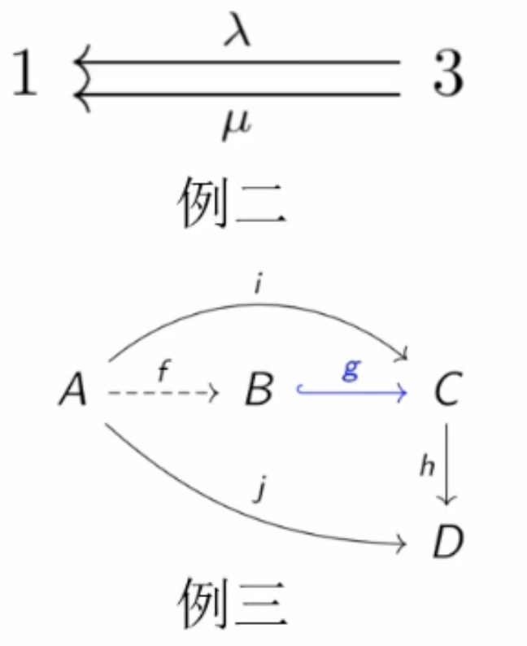
tikzcd 手册：https://ctan.math.washington.edu/tex-archive/graphics/pgf/contrib/tikz-cd/tikz-cd-doc.pdf
bend left ：弯曲
dashed ：虚线
hook ：实线勾
范例：
\documentclass{amsart}
\usepackage{tikz,tikz-cd}
\begin{document}
Example two
\begin{equation*}
\begin{tikzcd}
A \ar[r,dashed,"f"] \ar[rr,bend left,"i"] \ar[rrd,bend right,"j"]
& B \ar[r,hook,"g"'] & C \ar[d,"h"] \\
& & D
\end{tikzcd}
\end{equation*}
Example three
\begin{equation*}
\begin{tikzcd}
1 & 3 \ar[l, shift right, "\lambda"'] \ar[l,shift left, "\mu"] \\
\end{tikzcd}
\end{equation*}
\begin{equation*}
\begin{tikzcd}
1 \ar[r,leftarrow, shift left, "\lambda"] \ar[r,leftarrow,shift right,"\mu"']& 3
\end{tikzcd}
\end{equation*}
\end{document}
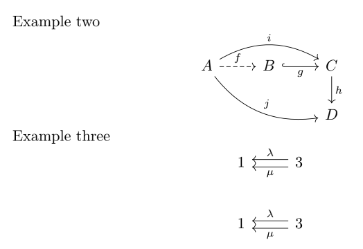
画图流程-进阶
- 先在纸上打好格子
- 复杂的图表画几步编译一下
- 不会的部分上网找例子
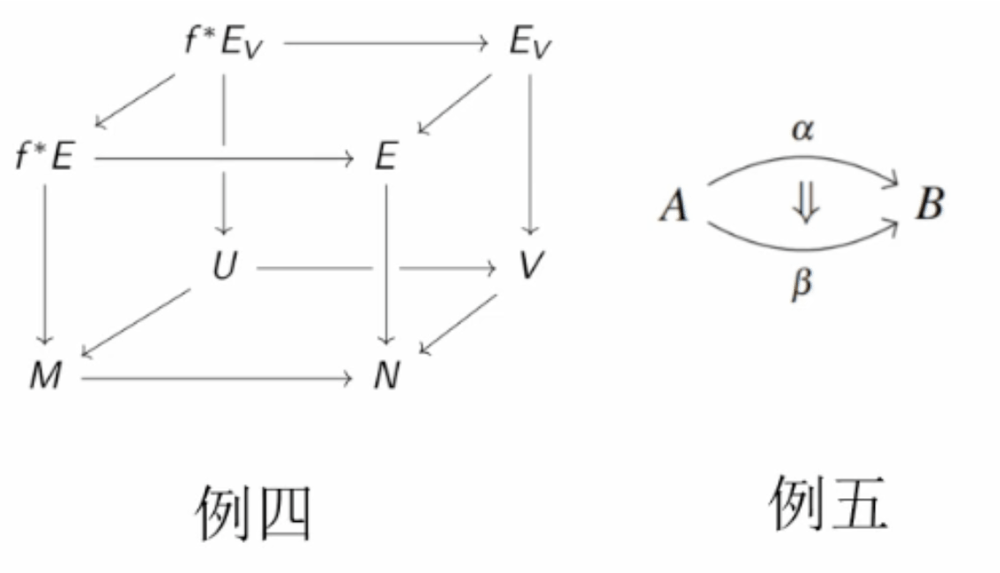
例4立方体，看似复杂，把它想象成2维，其实是4行4列的点，只是有些点是空的。
Example four
\begin{equation*}
\begin{tikzcd}
& f^{*}E_v \ar[dl] \ar[dd] \ar[rr] & & E_v \ar[dl] \ar[dd] \\
f^{*}E \ar[rr,crossing over] \ar[dd] & & E & \\
& U \ar[rr] \ar[dl] & & V \ar[dl] \\
M \ar[rr] & & N \ar[from=uu,crossing over] &
\end{tikzcd}
\end{equation*}
from=uu 等价于 uu, leftarrow
例5 2个函子之间的自然变换
Example five
\begin{equation*}
\begin{tikzcd}
A \ar[r,bend left, "\alpha"{name=U}] \ar[r,bend right,"\beta"'{name=D}]& b
\arrow[Rightarrow,from=U, to=D]
\end{tikzcd}
\end{equation*}
给标签起名，再单独用箭头指向
\begin{equation*}
\begin{tikzcd}
A \ar[r,bend left, "\alpha"{name=U}] \ar[r,bend right,"\beta"'{name=D}]& b
\arrow[phantom,from=U, to=D,"\Downarrow"]
\end{tikzcd}
\end{equation*}
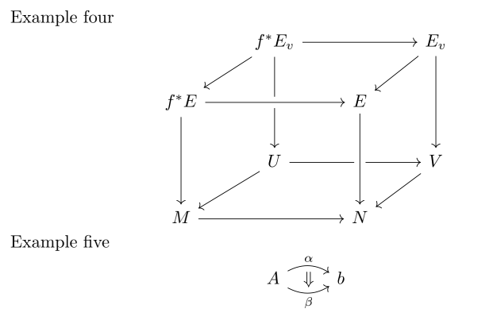
手写符号识别网站: http://detexify.kirelabs.org
常见错误
- C-c ` 显示错误
- 标签被盖住时： near start 上移
- 标签比较长时可以用{}括起来。
- tikzcd环境内不能有多余的空行
更多小技巧
引子-5分钟说明用emacs写latex
章节折叠
自带 outline-mode
- C-o C-t hide-body：折叠所有标题，只保留标题(tree)
- C-o C-e show-entry：展开当前标题(entry)
- C-o C-a show-all：展开所有标题(all)
上下标补全调整
安装cdLaTeX插件
^和_自动补全括号<tab>自动跳出括号并简化
快速输入希腊字母与数学符号
安装cdLaTeX插件
按 ` 反引号1左边的键，快速输入数学符号
输入 $ 后自动补全
安装cdLaTeX插件
快速插入数学字体
安装cdLaTeX插件
(希腊)字母后按 ' 单引号
快速插入文本字体
安装cdLaTeX插件
选中后按 ' 单引号
Tab 补全一切
安装cdLaTeX插件
- 带括号的 LaTeX 宏命令，
\frace{}{},\sqrt{},\text{}等
配套输入各式括号
安装cdLaTeX插件，并自定义设置
- 快速输入括号
\left\{ \right},\big( \big),< >等
快速插入环境模板
安装cdLaTeX插件，并自定义设置
- 快速插入环境模板：如，
enu <tab>
插入引用
安装cdLaTeX插件
标签
- 引用单个标签
ref <tab> <标签类型> - 引用多个标签：
m作标记，<enter>确认 - 插入标签，并自动生成标签签名：
lbl <tab>
快速插入table等环境
安装auctex插件
LaTeX环境：
- C-c C-e 插入环境
- C-u C-c C-e 改变环境名
快速注释与消除注释
选中区域 + C-c ;
- 注释一行：
C-a C-@ C-e C-c - 注释环境：
C-c . C-C ; - 注释章节：
C-c * C-c ;
数学符号美化
M-x prettify-symbols-mode
编辑窗口预览公式
安装auctex插件
C-c C-c C-p
新手Emacs快速配置与插件管理
承接上期五分钟说服你用Emacs写LaTeX, 在本期我将带领大家进行用于 LaTeX 写作的 Emacs 基本配置, 讲解从软件安装到插件管理的全过程. 最后将给大家推荐两组非常实用的插件: 第一组插件 which-key + keycast + helpful 将帮助我们快速熟悉 Emacs 的操作和概念, 第二组插件 vertico + marginalia + orderless 将有效提升我们在小缓冲区的补全体验, 并附上 cdlatax 和 AucTeX 的基本设置.
Emacs 安装
Emacs 可以在 Windows, Linux, MacOS 全平台上运行, 甚至在 Android 上也可以通过 termux 等命令行工具使用.
- 2023年4月底正式版本 28.2
下面介绍的安装方法主要针对的是最新正式版.
Linux
Ubuntu 命令行中输入
sudo apt install emacs
MacOS
- 先安装
Homebrew(https://brew.sh/). 命令行中输入
/bin/bash -c "$(curl -fsSL https://raw.githubusercontent.com/Homebrew/install/HEAD/install.sh)"
命令行中输入
brew install emacs
Windows
有两种方法
- 用
msys2安装
从https://www.msys2.org/安装并下载 msys2, 安装结束后打开它的 mingw64.exe 命令行 (默认目录是 C:/msys64/) 并输入
pacman -S mingw-w64-x86_64-emacs
通过 msys2 安装的好处是上面还可以很方便安装其它开源软件, 如 git, epdfinfo 等.
- 官网下载安装程序
安装 Emacs 后的额外设置
在安装完 Emacs 之后, 我强烈推荐大家在你使用的机器上交换 <大写锁定键> 与 <control>. Emacs 常常使用 以 <control> 开始的快捷键. 在 Emacs 诞生之初时通用的键盘, <control> 确实是在当今键盘 <caps lock> 的位置的. 交换这两个键的具体操作在不同系统上也不一样.
windows
需要去修改注册表. 方法如下
<Win> + r输入regedit打开注册表- 找到
[HKEY_LOCAL_MACHINE\SYSTEM\CurrentControlSet\Control\Keyboard Layout] - 打开或新建
Scancode文件, 把内容修改为
00 00 00 00 00 00 00 00 03 00 00 00 1d 00 3a 00 3a 00 1d 00 00 00 00 00
- 保存
Scancode文件并重启电脑
ubuntu
在 Ubuntu 下, 可以使用图形界面的 gnome-tweaks 找到交换 <caps lock> 和 <control> 的设置. 安装 gnome-tweaks 可以通过 apt 进行:
sudo apt install gnome-tweaks
然后打开 gnome-tweaks 的键盘设置, 在高级选项里有关于 <control> 键的设置. 你不仅仅可以交换它与 <caps lock>, 也可以进行许多别的设置.
又或者, 在很多 Linux 系统的命令行下输入
setxkbmap -option ctrl:swapcaps
也可以交换 <caps lock> 与 <control>.
MacOS
在 MacOS 中, 大家可以在 system -> keyboard -> functional keys 中调整所有功能键的键位.
最后再啰嗦一句, 交换 <caps lock> 与 <control> 绝不是可有可无的事情, 它在我们日常使用 Emacs 中真的非常重要! 大家千万不要怕麻烦.
Window家目录修改
剩下两个设置只有 Windows 用户需要进行. 第一是把 Emacs 的家目录, 在 Emacs 中通过 ~ 访问, 改成 C:/Users/<用户名>/. 默认的家目录是 C:/Users/<用户名>/AppData/Roaming/. 从这个目录出发不方便我们访问像 "我的文档" 这种常用文件夹, 所以我们需要手动修改家目录为 C:/Users/<用户名>/, 与 Linux 和 MacOS 保持一致. 方法是搜索 Edit the system variables, 打开环境变量的设置, 然后增加一个用户的环境变量 HOME, 把它设置为 C:/Users/<用户名>/.
第二是保证你的 Emacs 安装目录在系统变量 PATH 上. 如果不在, 还是在同一个界面, 把包含你 emacs.exe 的文件夹路径手动添加到 PATH 变量中.
多版本emacs启动
windows
env HOME=~/emacs-demo emacs --debug-init
Linux/MacOS
(HOME=$(pwd) emacs --debug-int)
Emacs 基本知识讲解与必知快捷键
在Emacs 中大家需要理解的一个核心概念就是命令. 在 Emacs 中所有的操作, 无论简单复杂都是命令.
Emacs 这个单词就来自于 macro, 即宏命令. 比如说我们想执行打开一个文件的操作, 有3种方式等价的操作方式:
- 从菜单栏里:
file->visit new file M-x find-file- 用快捷键
C-x C-f并输入文件名
Emacs 中有许多有用的命令. 你未来也可以自己通过 elisp 语言编写自己命令. Emacs 把其中最常用的命令都绑定了快捷键, 用户自己也可以设置自己的快捷键. 当我们用熟了之后, 很多快捷键就会像打字一样形成肌肉记忆. 作为新手, 我们有很多键盘的快捷操作可以用鼠标代替.
新手必知的几个快捷键
在表中, C 表示 control 键, M 表示 alt. 这也是 Emacs 快捷键通用写法. 最右边一列是快捷键对应的命令名, 也就是第一列所有的快捷键都等价于 M-x 加上第三列.
| 快捷键 | 操作 | 命令名 |
|---|---|---|
C-g |
中止当前一!切!命!令! | keyboard-quit |
C-/ |
撤销命令 | undo |
| 文件操作 | ||
C-x C-f |
打开文件 | find-file |
C-x C-s |
保存文件 | save-buffer |
C-x b |
切换文件 (缓冲区) | switch-to-buffer |
C-x 1 |
关闭其它窗口 | delete-other-window |
C-h f/v/k |
查询命令/变量/快捷键 | describe-function/variable/key |
| 文本处理 | ||
M-w |
复制 | kill-ring-save |
C-w |
剪切 | kill-region |
C-y |
粘贴 | yank |
elisp代码执行：
C-x C-e：eval-last-sexp执行光标所在代码eval-region：执行选中区域代码eval-buffer：执行当前缓冲区代码M-x load-file <ENTER> FILE_NAME：执行指定文件代码
中止命令与撤销命令
在 Emacs 中发生误操作时, 你需要知道如何中止与撤销命令. 当你的快捷键输入一半想反悔时 (是的, Emacs 的快捷键可以很长!), 可以使用 C-g 重新来输入, 又或者 Emacs 在执行命令时卡住了, 你可以通过 C-g 来让它恢复正常.
如果你需要撤回上一条命令, 则需要使用 C-/. 但值得注意的是, 撤回撤回命令的命令也是同一个键; 这偶尔会让人抓狂.
文件与窗口相关命令
下面我们介绍 Emacs 中最基础的几个管理界面的快捷键.
首先是打开文件, C-x C-f, 命令名是 find-file. 这里的 find 隐含 Emacs 会根据不同情况执行不同操作: 若文件存在, 则是普通的打开文件; 若文件不存在, 则是打开一个新文件.
第二个是保存文件, C-x C-s, 对应 save-buffer, 即把当前缓冲区 (更新后) 的内容写进文件里.
大多数情况将缓冲区 (buffer) 等同于文件不会影响你的 Emacs 使用. 这里简单讲讲它们的不同. 文件存在于电脑硬盘上, 而Emacs 的缓冲区只显示文件内容. 当你把文件内容读入缓冲区以后, 又在 Emacs 外修改了文件的内容, 缓冲区中的内容并不会改变, 除非你明确指示 Emacs 重新读取. 而在 Windows 中, 一个文件同时只能被一个 Windows 程序打开. Emacs 的缓冲区也不一定对应着文件, 在模式栏大家可以看到当前缓冲区的名字. 名字被两个 * 号包含的一般是非文件的缓冲区, 例如 *Message* 用于显示 Emacs 给用户的信息, 编译 LaTeX 时 *Output* 会存放编译输出结果等.
第三个命令是切换缓冲区/文件, C-x b, 对应 switch-to-buffer. 执行后在最下方的小缓冲区会提示输入你想要切换的缓冲区名字, 默认是上一个显示的缓冲区, 直接回车就行.
在 Emacs 中同时显示多个缓冲区的方法是打开多个窗口 (window), 然后在每个窗口中显示一个缓冲区. 有时 Emacs 自动创建新的窗口, 例如展示帮助信息时. 新手最常用的操作是保留当前光标所在窗口, 而关掉其它所有窗口. 这可以通过, C-x 1, 即 delete-other-window 实现. 我们可以用鼠标辅助我们在不同窗口间切换.
帮助命令
Emacs 中查询帮助信息的快捷键是 C-h <字母>. 常用的有 C-h f, 查询命令, C-h v, 查询变量, 以及 C-h k, 查询快捷键. 通常 C-h 命令会自动创建新的窗口显示帮助信息. 我们可以先把光标移到我们工作的缓冲区, 然后用 C-x 1 关闭掉帮助信息窗口. 注意此时帮助信息的缓冲区并没有关闭, 重新显示可以通过 C-x b 并查找以 *help* 命名的缓冲区.
复制/剪切/粘贴
Emacs 有自己一套复制/剪切/粘贴的快捷键: M-w / C-w / C-y. 这和一般程序的 C-c / C-x / C-v 不同, 需要大家习惯. 所有复制或剪切的内容都会进入一个叫 kill-ring 的地方, 它相当于一个剪粘版的历史记录. 粘贴快捷键 C-y 会粘贴最近一条记录, 如果你想访问之前的记录, 可以紧跟着 C-y 再按下一次或多次 M-y.
Emacs 插件管理
接下来我们介绍如何更好地管理 Emacs 插件, 或叫 Emacs 包 (package). 插件可以给我们带来更多的功能, 是 Emacs 使用中不可缺少的一环. 插件的安装和设置与其它的 Emacs 设置一样, 都放在 Emacs 的启动文件 ~/.emacs.d/init.el 中. 关于插件安装与设置, 我推荐大家使用现在常用的 use-package 语法, 它的语法更简洁, 还可以很方便地自动安装插件.
use-package管理插件的插件
- 更简洁的语法
- 更方便自动安装
两种下载和安装插件的方式
package.el：内置straight.el需要访问 github.com 以及使用git
- msys2 安装 不行
- msys2 安装 不行
pacman -S git
我们在 package.el 和 straight.el 的设置示例中都手动检查并安装了 use-package. Emacs 29 后 use-package 已经是内置插件, 相关代码可以省去.
package.el 设置示例
以下我们提供了 package.el 的一个设置示例. 大家需要把如下代码放入设置文件 ~/.emacs.d/init.el 中.
;; -*- lexical-binding: t; -*- ;; 静态作用域声明必须放在首行 ;; 把 Emacs 自动添加的代码放到 custom.el 中 (setq custom-file (expand-file-name "custom.el" user-emacs-directory)) ;;======================================== ;; 使用 package.el 设置 Emacs 插件管理 ;;======================================== (require 'package) ; 加载 package.el (setq package-check-signature nil) ; 如果检查签名有问题可以加入这一行 ;; 添加仓库位置 (add-to-list 'package-archives '("melpa" . "http://melpa.org/packages/") t) (add-to-list 'package-archives '("melpa-stable" . "http://stable.melpa.org/packages/") t) ;; 国内用户也可以使用清华的镜像网站. 用下面的代码代替上面两行 ;; (setq package-archives ;; '(("gnu" . "http://mirrors.tuna.tsinghua.edu.cn/elpa/gnu/") ;; ("nongnu" . "http://mirrors.tuna.tsinghua.edu.cn/elpa/nongnu/") ;; ("melpa-stable" . "http://mirrors.tuna.tsinghua.edu.cn/elpa/stable-melpa/") ;; ("melpa" . "http://mirrors.tuna.tsinghua.edu.cn/elpa/melpa/"))) ;; 刷新插件列表 (unless package-archive-contents (package-refresh-contents)) ;; 自动安装 use-package. 在Emacs 29中已内置故可省略 (unless (package-installed-p 'use-package) (package-install 'use-package)) ;; 自动安装所有使用 use-package 声明的插件 (require 'use-package-ensure) (setq use-package-always-ensure t) ;;======================================== ;; Emacs 插件管理设置完毕 ;;======================================== ;;======================================== ;; 这段代码放在最后, 加载 Emacs 自动设置的变量 (if (file-exists-p custom-file) (load-file custom-file)) ;;========================================
这段代码的第一部分先启用了 package.el, 然后通过 package-archives 变量设置了下载插件的网址. 在国内也可以使用清华的软件源. 接下来 package-refresh-contents 刷新了插件列表. 然后我们自动检测 use-package 是否安装, 如果没有安装则自动下载安装. 最后, 我们设置了 use-package-always-ensure 变量为 t, 这样以后我们所有用 use-package 声明的插件都会自动安装.
straight.el 设置示例
- 先安装git
因为 straight.el 与 package.el 难以共存, 所以我们必须早早手动禁用内置的 package.el. 这必须修改一个我们平时很少用的 ~emacs.d/early-init.el.
- 在
early-init.el中加入，并重启emacs
;; 在执行 init.el 前禁用 package.el (setq package-enable-at-startup nil)
- 在
init.el中加入以下代码:
;; -*- lexical-binding: t; -*- ;;======================================== ;; 把 Emacs 自动添加的代码放到 custom.el 中 (setq custom-file (expand-file-name "custom.el" user-emacs-directory)) ;; 使用 straight.el 设置 Emacs 插件管理 ;;======================================== (defvar bootstrap-version) ;; 修复 Emacs 29 修改了 native-compile 相关变量导致的 bug (unless (version<= emacs-version "28.2") (setq straight-repository-branch "develop")) ;; 以下代码从 straight.el 主页 https://github.com/radian-software/straight.el 上复制 (let ((bootstrap-file (expand-file-name "straight/repos/straight.el/bootstrap.el" user-emacs-directory)) (bootstrap-version 6)) (unless (file-exists-p bootstrap-file) (with-current-buffer (url-retrieve-synchronously "https://raw.githubusercontent.com/radian-software/straight.el/develop/install.el" 'silent 'inhibit-cookies) (goto-char (point-max)) (eval-print-last-sexp))) (load bootstrap-file nil 'nomessage)) (straight-use-package 'use-package) ; 用 straight.el 安装 use-package 声明的插件 (setq straight-use-package-by-default t) ; 自动安装所有插件, 相当于加入 :straight t ;;======================================== ;; Emacs 插件管理设置完毕 ;;======================================== ;;======================================== ;; 这段代码放在最后, 加载 Emacs 自动设置的变量 (if (file-exists-p custom-file) (load-file custom-file)) ;;========================================
这里大部分的代码是 straight.el 的 github 主页上提供的下载与安装 straight 的代码, 然后再用 straight 安装 use-package. 最后我用把 straight-use-package-by-default 变量设为 t, 这是在使用 straight 时进行插件自动安装的设置.
推荐插件
安装插件的方法
- 把相关的
use-package代码块复制到init.el - 重启emacs，或者在
init.el界面使用M-x eval-buffer加载代码块.
更快熟悉 emacs
- 快捷键提示
which-key插件 - 显示当前快捷键及绑定命令
keycast插件 - 更好的帮助界面
helpful插件
- 插件组合1: 更多的帮助信息
which-key+keycast+helpful. 安装代码如下
(use-package which-key :custom (which-key-idle-delay 0.5) ; 延迟时间, 以秒为单位 :config (which-key-mode)) ; 启用 which-key 模式 (use-package keycast :config (keycast-header-line-mode 1)) ; 在标题显示 (use-package helpful :bind ;; 重新定向 C-h 开始的命令 (([remap describe-function] . #'helpful-callable) ([remap describe-variable] . #'helpful-variable) ([remap describe-key] . #'helpful-key) ([remap describe-command] . #'helpful-command) ([remap describe-symbol] . #'helpful-symbol) ("C-h C-d" . #'helpful-at-point) ("C-h F" . #'helpful-function)))
which-key可以在按下快捷键的时候自动提示你接下来可能的快捷键. 比如按下C-h, 就会提示接下来你按v,f,k等可以查看哪种类型的帮助. 如果把鼠标悬停在选项上也会在浮窗中显示对应命令的帮助.
keycast则会显示当前你使用的快捷键及对应的命令名. 它有4种显示的位置. 代码中我们选择在headrer-line, 也就是 Emacs 窗口的最上方显示. 如果大家想在别的地方显示, 比如模式栏, 可以把(keycast-header-line-mode 1)改成(keycast-mode-line-mode 1).
这两个插件可以帮助新手快速熟悉 Emacs 的快捷键和命令. 对于老用户来说, 也可以帮你快速熟悉新安装的插件. 我自己平时也是常开的.
helpful则优化了帮助界面的信息显示, 包括更多有用的信息和高亮.
更好的补全界面
vertico + marginalia + orderless
- tab 补全
- C-n/C-p 上下浏览备选项
- 插件组合2: 更好的补全界面
在 Emacs 中输入命令或打开文件, 切换缓冲区等等都会用到小缓冲区补全. 第二组插件是针对小缓冲区补全的. 代码如下
(use-package vertico ; 竖式展开小缓冲区 :custom (verticle-cycle t) :config (vertico-mode)) (use-package marginalia ; 更多信息 :config (marginalia-mode)) (use-package orderless ; 乱序补全 :custom (completion-styles '(orderless basic)) (completion-category-defaults nil) (completion-category-overrides '((file (styles partial-completion)))))
vertico把每个补全选项放在单独的一行, 配合marginalia会在每个选项的右边加入更多相关信息.
在小缓冲区中输入时, 我们可以按
<tab>补全当前的输入. 加入vertico之后, 我们可以用C-n和C-p或者上下移动键来选择不同的补全选项.C-n和C-p也是 Emacs 中上下移动光标的快捷键.
最后的
orderless允许我们在小缓冲区补全时忽略单词的顺序. 例如, 如果我们输入M-x, 想要匹配find-file命令, 在默认情况下必须先输入find, 再输入file才能找到find-file. 如果你用了orderless, 则可以通过file find找到, 或者部分的单词fil fin <tab>找到.
开始用emacs写LaTex
最基本的LaTeX设置
(defun my/latex-hook () (turn-on-cdlatex) (turn-on-reftex)) (use-package cdlatex :load-path "lisp/" ; 需要手动从网盘或 https://github.com/cdominik/cdlatex/blob/master/cdlatex.el 下载 cdlatex.el 文件, 并置于 ~/.emacs.d/lisp/ 文件夹下 ;; 若使用 straight, 注释前一行, 并取消下一行注释: ;; :straight (:host github :repo "cdominik/cdlatex" ) ) (use-package tex :ensure auctex ;; 若使用 straight, 注释前一行, 并取消下一行注释: ;; :straight auctex :custom (TeX-parse-self t) ; 自动解析 tex 文件 (TeX-PDF-mode t) (TeX-DVI-via-PDFTeX t) :config (setq-default TeX-master t) ; 默认询问主文件 (add-hook 'LaTeX-mode-hook 'my-latex-hook)) ; 加载LaTeX模式设置
关于 cdlatex 的安装, 要注意的是, 它并不在任何的软件源时. 如果使用 package.el, 你需要手动下载这个文件 (github 或者我网盘里的备份), 并用 :load-path 关键字指定文件的目录. 如果是 straight, 则需要我们指定 github 源码的网址.
AucTeX 是通过 use-package tex 激活的. 因为不同名的问题, 我们要额外加入 :ensure auctex 或 :straight auctex. 另外, 其实 Emacs 已经内置了 AucTeX, 但不一定是最新版本, 我们这里的 use-package 则会把它更新到最新版.
附录1-emacs最强内置pdf阅读功能pdf-tools简介
Emacs额外依赖软件库：https://www.jianguoyun.com/p/DTiBwxMQ856tCxiflP0EIAA
Emacs配置：https://gitee.com/mickey991/emacs-config
B站专栏：Emacs中pdf-tools的安装与配置指南 - 哔哩哔哩 (bilibili.com)
Gitee笔记: https://mickey991.gitee.io/elatex/easy-latex-writing-ap01-pdf-tools
使用 pdf-tools 的理由
在用 Emacs 编写 LaTeX 文档的过程中, 你是否…
- 预览 pdf 需要来回在编辑器和 pdf 阅读器之间切换?
- pdf 阅读器想实现一些新功能?
- 想给 pdf 阅读器的常用功能定义新的快捷键?
又或者, 你想用 Emacs 做读书笔记, 需要同时:
- 输入大量的数学符号
- 对 pdf 文件进行批注
- 同步 Emacs 笔记文件和 pdf 文件批注的位置
`pdf-tools` 可以完美实现这些目标.
pdf-tools 的优点
与 `DocView` (Emacs 中内置的 pdf 阅读器) 比较
- `DocView`: 不清晰, 阅读效果差, 读取速度慢
- `pdf-tools`:
- 速度快, 图片渲染效果好
- 正常鼠标操作 + 大量 (可自定义) 快捷键
- 速度快, 图片渲染效果好
演示
功能:
- 基础的 pdf 阅读功能应有尽有, 包括超链接跳转和返回, 展开目录等
- 与 `auctex` 配合使用, 支持对编译后 pdf 进行正向/反向搜索
- pdf 批注, 高亮, 下划线 (可保存在 pdf 文件上)
使用场景 {#使用场景}
- 编写 `latex` 文档
- 配合 `org-noter` 在 pdf 上做读书笔记
安装流程
Emacs 包的安装
- 保证 `melpa-stable` 在 Emacs 包的列表中
可以通过查看 `package-archives` 变量进行确认
(require 'package) ;; Emacs 包管理器 (setq package-check-signature nil) ;; 如果有签名验证问题, 可以设置不检查签名 (setq package-archives '(("elpa" . "http://tromey.com/elpa/") ("melpa-stable" . "https://stable.melpa.org/packages/") ;; 下载 pdf-tools 只需要这个 ("melpa" . "https://melpa.org/packages/") ("gnu" . "http://elpa.gnu.org/packages/")))
- 用 M-x package-refresh-contents 刷新包
- 用 M-x package-list-package 打开 Emacs 包的列表
- 用 C-s pdf-tools找到 `pdf-tools`
- 安装 `melpa-stable` 版本 (2023.3: `melpa` 版本仍有 bug)
验证：M-x pdf-tools-install 提示安装epdfinfo，这里C-g不安装。
epdfinfo 的安装
`epdfinfo.exe` 及其它一些依赖文件 (例如 libpopper-version.dl) 可以帮助 Emacs 读取 pdf 文件
两种方法
- 把预编译好的文件直接放进 Emacs 的安装目录 (将上传一个可用的版本: https://www.jianguoyun.com/p/DTiBwxMQ856tCxiflP0EIAA)
- window 利用 `msys2`
- 苹果操作系统： brew
- 用
msys2安装epdfinfo
*什么是 `msys2`? *
可以将许多开源程序本地化编译为 Windows 程序的平台
优点
- 软件管理和升级方便
- Emacs 一些高阶功能依赖的不少开源程序都能在上面下载
- 其它可以安装的开源软件:
`Git`, `Emacs`, `texlive`, `gcc`, `python` …
步骤
- 到 `msys2` 官网上 https://www.msys2.org/ 下载安装程序 `msys2-x86_x64-<date>.exe`. 默认安装目录为 `C:/msys64/`.
- 打开 `C:/msys64/` 下 `mingw64.exe`. 会弹出一个命令行终端
- 在命令行终端中输入
pacman -S mingw-w64-x86_64-emacs-pdf-tools-server
- 以上命令可以在
- 确认并安装所有依赖包.
- 安装完成后, 你应该能在 `C:\msys64\mingw64\bin` 中找到 `epdfinfo.exe`.
- 将 `C:\msys64\mingw64\bin` 加入环境变量 `PATH`
- 打开emacs 打开pdf文件，M-x pdf-tools-install 使用pdf-tools打开pdf文件。 状态栏显示PDFVIEW
同样的安装也适用于emacs 和 texlive本身。
- 软件管理和升级方便
- Macos 安装epdinfo
brew update brew install poppler automake
- 打开emacs 打开pdf文件，M-x pdf-tools-install 使用pdf-tools打开pdf文件
- 打开emacs 打开pdf文件，M-x pdf-tools-install 使用pdf-tools打开pdf文件
基本配置
启动 pdf-tools
在 `init.el` 文件中加入
(pdf-tools-install)
如果想延迟启动 (如打开 pdf 文件后再启动, 节省 Emacs 启动时间), 可以用下面的代码替换
(pdf-loader-install)
配合 AucTeX 使用的配置
保持不变的设置
(setq TeX-PDF-mode t) (setq TeX-source-correlate-mode t) ;; 编译后开启正反向搜索 (setq TeX-source-correlate-method 'synctex) ;; 正反向搜索的执行方式 (setq TeX-source-correlate-start-server t) ;; 不再询问是否开启服务器以执行反向搜索
使用 `Sumatra PDF` 的配置
(setq TeX-view-program-list '(("Sumatra PDF" ("\"C:/Program Files/SumatraPDF/SumatraPDF.exe\" -reuse-instance" (mode-io-correlate " -forward-search %b %n ") " %o")))) (assq-delete-all (quote output-pdf) TeX-view-program-selection) (add-to-list 'TeX-view-program-selection '(output-pdf "Sumatra PDF")
`pdf-tools` 的配置
(setq TeX-view-program-selection '((output-pdf "PDF Tools"))) ;; 用pdf-tools 打开 pdf (add-hook 'TeX-after-compilation-finished-functions #'TeX-revert-document-buffer) ;; 在完成编译后刷新 pdf 文件
生效过程：
- 修改好emacs配置文件，保存，M-x eval-buffer
- 打开tex文件，C-c C-n 刷新tex文件，C-x 3 分割成2个窗口
- C-c C-c 编译后生成pdf文件， C-c C-v 打开pdf
操作与个性化: 移动
- 向下/上小滑动: 鼠标滚轮, C-n / C-p
- 向下/上大滑动: space / S-space
- 向后/前翻页: n /p
我的设置: 尽量把移动绑定在左手 (awsd), 空出右手进行鼠标操作.
(define-key pdf-view-mode-map "d" 'pdf-view-next-page-command) ;; 向后翻页 (define-key pdf-view-mode-map "a" 'pdf-view-previous-page-command) ;; 向前翻页 (define-key pdf-view-mode-map "s" 'pdf-view-scroll-up-or-next-page) ;; 向下滑动 (define-key pdf-view-mode-map "w" 'pdf-view-scroll-down-or-previous-page) ;; 向上滑动
操作与个性化-批注
- 高亮: 右键菜单Add markup annotation -> highlight, 或 C-C C-a h (h=highlight)
- 直线下划线: 右键菜单, 或 C-c C-a u (u=underline)
- 波浪下划线: 右键菜单, 或 C-c C-a s (s=squiggly)
- 文字批注: 右键菜单Add text annotation, 或 C-c C-a t (t=text)
- 删除批注: 右键菜单, 或 C-c C-a D (d=delete)
我的设置简化按键:
(require 'pdf-annot) (define-key pdf-annot-minor-mode-map (kbd "C-a a") 'pdf-annot-add-highlight-markup-annotation) ;; 高亮 (define-key pdf-annot-minor-mode-map (kbd "C-a s") 'pdf-annot-add-squiggly-markup-annotation) ;; 波浪线 (define-key pdf-annot-minor-mode-map (kbd "C-a u") 'pdf-annot-add-underline-markup-annotation) ;; 下划线 (define-key pdf-annot-minor-mode-map (kbd "C-a d") 'pdf-annot-delete) ;; 删除
对于多个一个字母的键绑定，用kbd
这样做的好处：
- 左手负责移动pdf、对选中字段执行命令
- 右手负责点一些区域
操作与个性化-文档跳转
- 展示目录: o
- 跳到目录位置: enter / M-enter
- 在开了2个窗口时，M-enter 跳到指定pdf位置并关闭大纲
- 跳到目录位置: enter / M-enter
- 关闭目录: q
- 返回上一个位置: l 所有操作会被记录，按l返回上一个操作位置
- 跳到下一个位置: r
这里重新绑定常用的返回功能 (小知识: 在 `Sumatra PDF` 里对应 Alt-right)
(require 'pdf-history) (define-key pdf-history-minor-mode-map "b" 'pdf-history-backward)
操作与个性化-放缩
- 放大/缩小: + / -
- 放大到页宽/页高/屏幕: W / H / P
- 重置: 0
打开 pdf 文件时自动放缩
(add-hook 'pdf-view-mode-hook 'pdf-view-fit-width-to-window) ;; 自动放大到页宽
- 图像旋转 R
- 帮助 h
其它可能出现的 bug
无法进行高亮-划线等
这可能是安装了 2023 年后 `pdf-tools` 的版本导致的. 可以从 M-x package-list-package 界面中确认是从 `melpa-stable` 中安装的
形同 (invalid-function pdf-view-current-page) 的错误信息
这是因为在 28.x 以后的 Emacs 版本中会开启本地化编译 (native compilation), 而 `pdf-tools` 中有一些语法过时了, 在本地化编译时会报错. 如果这个 bug 不解决的话, 不影响 `pdf-tools` 的使用, 但是会稍微降低 pdf 渲染的速度.
- 如何确认你的 Emacs 版本支持本地化编译
用 C-h v enter system-configuration-options enter 查询, 如果变量包含字段 `–with-native-compilation`, 则说明当前版本支持本地化编译
本地化编译后的文件会放在 `.emacs.d/eln-cache/` 中, 以 `.elc` 结尾.
- 解决方法
如果在上面的目录下已经产生了 `pdf-*.elc` 文件, 请先删除.
- 完全禁用本地化编译
(setq no-native-compile t)
- 只禁止 `pdf-tools` 的本地化编译
(setq native-comp-deferred-compilation-deny-list '(".*pdf.*"))
完整配置
windows:
(pdf-tools-install) (setq native-comp-deferred-compilation-deny-list '(".*pdf.*")) (setq TeX-view-program-selection '((output-pdf "PDF Tools"))) ;; 用pdf-tools 打开 pdf (add-hook 'TeX-after-compilation-finished-functions #'TeX-revert-document-buffer) ;; 在完成编译后刷新 pdf 文件 (define-key pdf-view-mode-map "d" 'pdf-view-next-page-command) ;; 向后翻页 (define-key pdf-view-mode-map "a" 'pdf-view-previous-page-command) ;; 向前翻页 (define-key pdf-view-mode-map "s" 'pdf-view-scroll-up-or-next-page) ;; 向下滑动 (define-key pdf-view-mode-map "w" 'pdf-view-scroll-down-or-previous-page) ;; 向上滑动 (require 'pdf-annot) (define-key pdf-annot-minor-mode-map (kbd "C-a a") 'pdf-annot-add-highlight-markup-annotation) ;; 高亮 (define-key pdf-annot-minor-mode-map (kbd "C-a s") 'pdf-annot-add-squiggly-markup-annotation) ;; 波浪线 (define-key pdf-annot-minor-mode-map (kbd "C-a u") 'pdf-annot-add-underline-markup-annotation) ;; 下划线 (define-key pdf-annot-minor-mode-map (kbd "C-a d") 'pdf-annot-delete) ;; 删除 (require 'pdf-history) (define-key pdf-history-minor-mode-map "b" 'pdf-history-backward) (add-hook 'pdf-view-mode-hook 'pdf-view-fit-width-to-window) ;; 自动放大到页宽
相关资源
- `pdf-tools` 的 `Github` 仓库: https://github.com/vedang/pdf-tools
- `msys2` 官网 https://www.msys2.org/
- `epdfinfo.exe` 可用版本: https://www.jianguoyun.com/p/DTiBwxMQ856tCxiflP0EIAA
附录2-如何优雅地预览数学公式(prettify-symbols-mode)
所见即所得的实现方式
文本编辑中的两个要素
- 文本本身
- 文本的格式
pdf 文件预览: 正向与逆向搜索
【Emacs+LaTeX教程】Emacs最强内置pdf阅读功能pdf-tools简介
缺点
- 需要大屏幕
- 如果编译错误就无法预览
使用 preview-latex
【教程】LaTeX+Emacs从零开始2-6节：所见即所得之Preview-latex
缺点
- 需要手动执行编译: 常用键
C-c C-p C-p - 代码的可读性不强
使用 prettify-symbols-mode
M-x prettify-symbols-mode
启动之后emacs会将buffer中大多数的latex宏定义的数学符号映秀到相应的unicode字符输出。
日常使用可以将 prieview latex 和 prettify 结合起来，因为prettify的效果已经非常好了，所以我们也可以降低使用preview latex 的频率。
优点
- 不需要手动触发
- 没有编译过程, 不会报错
- 提高了代码的可读性
如何设置
版本要求
- Emacs >= 25
- AucTex >= 13.1.10 (可通过
M-x package-list-package中查找auctex查看)
临时打开
M-x prettify-symbols-mode
init.el 文件设置
(defun my-latex-hook () (prettify-symbols-mode t)) (add-hook 'LaTeX-mode-hook 'my-latex-hook)
字体设置
保证 Unicode 数学符号可以正确显示
(set-fontset-font "fontset-default" 'mathematical "Cambria Math")
自动展开
设置自动展开光标附近的宏命令.
(setq prettify-symbols-unprettify-at-point t)
C-x C-e 直接加载这个命令
tips: 如果只想删除刚输入的一个宏命令, 最快的方法是用 C-/ 撤消, 而不是一个个字符删除.
加入自己的符号
将 ("<latex 宏命令>" . <unicode 编码>) 加入列表中
- latex 宏命令一般以 "
\\" 开头, 表示一个普通的 "\". - unicode 编码以 "
#x" 表示是16进制数字, 否则就是10进制 - 常用编码表: https://en.wikipedia.org/wiki/Mathematical_operators_and_symbols_in_Unicode
;; #x开头为16进制编码 (require 'tex-mode) (defun my/more-prettified-symbols () (mapc (lambda (pair) (cl-pushnew pair tex--prettify-symbols-alist)) '(("\\Z" . 8484) ;; 大多数人在latex中会用 \Z, \Q, \N, \R 表示数域 ("\\Q" . 8474) ("\\N" . 8469) ("\\R" . 8477) ("\\eps" . 949) ("\\ONE" . #x1D7D9) ("\\mathbb{S}" . #x1D54A) ("\\PP" . #x2119) ;; 个人需要, 经常要使用P和E的数学字体 ("\\P" . #x1D5AF ) ("\\Pp" . #x1D40F) ("\\E" . #x1D5A4) ("\\Ee" . #x1D404) ("\\EE" . #x1D53C ) ("\\Fc" . #x2131) ("\\Nc" . #x1D4A9)))) (my/more-prettified-symbols)
个人加入编码的原则
- 原列表中没有的编码
- 像
\N,\Z等大多数人使用的宏命令, 这样可以减少与他人合作的障碍 - 进一步简化自己的常用命令, 像上面的各种
E,P.
LaTeX 相关设置汇总
;; 以下为LaTeX mode相关设置 (setq-default TeX-master nil) ;; 编译时问询主文件名称 (setq TeX-parse-selt t) ;; 对新文件自动解析(usepackage, bibliograph, newtheorem等信息) ;; PDF正向搜索相关设置 (setq TeX-PDF-mode t) (setq TeX-source-correlate-mode t) (setq TeX-source-correlate-method 'synctex) (setq TeX-view-program-selection '((output-pdf "PDF Tools"))) ;; 用pdf-tools 打开 pdf (add-hook 'TeX-after-compilation-finished-functions #'TeX-revert-document-buffer) ;; 在完成编译后刷新 pdf 文件 ;; 打开TeX文件时应该加载的mode/执行的命令 (defun my-latex-hook () (turn-on-cdlatex) ;; 加载cdlatex (outline-minor-mode) ;; 加载outline mode (prettify-symbols-mode t) ;; 将宏定义的数学符号映秀到相应的unicode字符输出 (turn-on-reftex) ;; 加载reftex (outline-hide-body)) ;; 打开文件时只显示章节标题 (add-hook 'LaTeX-mode-hook 'my-latex-hook) ;; prettify (setq prettify-symbols-unprettify-at-point t) ;; 设置自动展开光标附近的宏命令 (set-fontset-font "fontset-default" 'mathematical "Cambria Math") ;; 保证 Unicode 数学符号可以正确显示 ;; 自定义显示的符号 (require 'tex-mode) (defun my/more-prettified-symbols () (mapc (lambda (pair) (cl-pushnew pair tex--prettify-symbols-alist)) '(("\\Z" . 8484) ;; 大多数人在latex中会用 \Z, \Q, \N, \R 表示数域 ("\\Q" . 8474) ("\\N" . 8469) ("\\R" . 8477) ("\\eps" . 949) ("\\ONE" . #x1D7D9) ("\\mathbb{S}" . #x1D54A) ("\\PP" . #x2119) ;; 个人需要, 经常要使用P和E的数学字体 ("\\P" . #x1D5AF ) ("\\Pp" . #x1D40F) ("\\E" . #x1D5A4) ("\\Ee" . #x1D404) ("\\EE" . #x1D53C ) ("\\Fc" . #x2131) ("\\Nc" . #x1D4A9)))) (my/more-prettified-symbols)
emacs上搭建终生个人知识库
本系列讲解如何围绕 org-roam 在 Emacs 上实现双链笔记与搭建个人知识库.
org-noter配置使用
org-noter 是什么?
- 实现功能: 用一个
.org笔记文件作为书本页边空间的延展, 记录任何信息, 包括截图, 数学公式, 代码等 pdf窗口和org窗口双向同步
- 在浏览
pdf文件时, 笔记窗口光标会跟随到相应位置 - 在笔记文件中移动光标,
pdf文件会跟随滚动
- 在浏览
选择 org-noter 的理由
… 或者选择 org 文件的理由
- 电子笔记: 无纸化, 便携, 可检索
- 纯文本格式, 易于保存和同步 (如用
Git) - 基于
org-mode的强大功能和生态
- 诞生于 2003 年 (Markdown 诞生于 2004 年)
org-mode是 Emacs 中最强大的插件- 天生为笔记而生. 核心是"大纲式浏览" + "标记语言" + "任务管理"
- 可以输出成
markdown,html,latex,odt等多种格式 - 本身支持 LaTeX 公式的编辑与预览
- 诞生于 2003 年 (Markdown 诞生于 2004 年)
安装
github: https://github.com/org-noter/org-noter
org-mode: Emacs 自带, 可以通过M-x package-list-package更新到Melpa最新版pdf-tools: 阅读pdf必备:org-noter:M-x package-list-package安装Melpa最新版
- 2023年3月更新内容
- 2维笔记定位
djvu,epub文件支持- 批注小标题优化
- 2维笔记定位
- 如果安装了
use-package, 可将以下代码加入init.el自动安装
- 2023年3月更新内容
(use-package org-noter
:ensure t )
基本操作
打开 org-noter
org-noter 打开需要执行 M-x org-noter 命令. 有两种方式
- 从
pdf文件打开
需要指定org文件名及路径. 这时会自动生成一个org文件, 并在org文件中保存pdf文件的路径名 - 从
org文件打开
这里org文件里须包含pdf文件的路径名, 一般来说是由第一种方式生成的org文件.
在打开的noter界面中PROPERTIES记录了这个PDF文件信息，下一次可以从org文件中打开org-noter。
未来的计划: 结合 org-roam + org-roam-bibtex + Zotero, 我们可以生成一个包含 pdf 路径的 org-noter 读书笔记模板
- 作为
org-noter的笔记文件使用 - 作为个人知识库一个节点被引用
大纲导入及 org-mode 基本操作
在 pdf 界面, M-x org-noter-create-skeleton tab 选择outline 可以导入 pdf 大纲
小技巧: 在 pdf-tools 中, o / q 可以显示/关闭大纲.
org-mode 常用快捷键:
<tab>: 展开/折叠光标下标题, 进行如下循环:
"只显示标题" -> "显示子标题" -> "显示子标题内容" -> "只显示标题"<shift>-<tab>: 同时展开/折叠所有标题M-<left>/M-<right>: 当前标题升级/降级M-S-<left>/M-S-<right>: 当前标题及其子标题升级/降级
插入笔记
org-noter 通过记录页码及位置保持笔记文件与 pdf 文件的同步. 根据定位的精度, 在 pdf 界面, 有3种插入笔记方式
- 方法1
- 按
i在当前页插入笔记 (page note) - 方法2
- 按
M-i在鼠标点击位置插入笔记 (precise note) - 方法3
- 选中文字后,
- 按
i插入笔记，~C-u i~ pdf选中高亮并插入笔记 - 按
<tab>插入笔记，C-u <tab>高亮并插入笔记。如果文字很短直接做为标题；如文字比较长则作为引用放笔记中，标题用默认的标题 - 按
M-i插入笔记，C-u M-i高亮并插入笔记
- 按
在笔记中还可以使用 cdlatex 编辑数学公式, 以及用 org-download 插入截图. 请到最后查看这些功能的基本设置.
位置同步
pdf->org: 自动org->pdf: 手动
M-p/M-./M-n: 上一/当前/下一页笔记C-M-p/C-M-./C-M-n: 上一/当前/下一条笔记- 以上命令也可以在
pdf界面中使用
高级设置
默认笔记目录
(setq org-noter-notes-search-path '("your/path/to/note-directory/" "2nd-path" "3rd-path"))
设置后, 从 pdf 文件中使用 org-noter 命令会自动在上述目录中寻找与文件名同名的 .org 笔记文件.
两种 org-noter 使用模式
- (推荐) 笔记在不同的
.org文件中 - 所有笔记在同一个
.org文件中: 将上述变量设置为一个文件名
(setq org-noter-notes-search-path '("your/path/to/notes.org"))
自动保存上次位置
(setq org-noter-auto-save-last-location t)
选中文字后插入笔记自动高亮
(setq org-noter-highlight-selected-text t)
这是全局设置. 如果想对某一条笔记临时启用或禁用, 可以使用 C-u 前缀.
例如: 当前高亮默认设置为 t, 但当前笔记不想高亮文字, 可以使用 C-u M-e 插入 precise note
长文本和短文本
- 短文本默认标题为全文
- 长文本默认标题为
Note for page XXX
修改长/短文本标准:
(setq org-noter-max-short-selected-text-length 20) ;; 默认为 80
修改短文本默认标题:
(setq org-noter-default-heading-title "第 $p$ 页的笔记")
修改快捷键
(global-set-key (kbd "C-c n n") 'org-noter) ;; 快速打开org-noter，与 org-roam 配合 (define-key org-noter-doc-mode-map (kbd "e") 'org-noter-insert-note) ;; 加入左手键位 (define-key org-noter-doc-mode-map (kbd "M-e") 'org-noter-insert-precise-note) ;; 加入左手键位
代码汇总
自定义设置的全部代码
(setq org-noter-notes-search-path '("your/path/to/note-directory/")) ;; 默认笔记路径 (setq org-noter-auto-save-last-location t) ;; 自动保存上次阅读位置 (setq org-noter-max-short-selected-text-length 20) ;; 默认为 80 (setq org-noter-default-heading-title "第 $p$ 页的笔记") ;; 默认短标题格式 (global-set-key (kbd "C-c n n") 'org-noter) ;; 与 org-roam 配合 (define-key org-noter-doc-mode-map (kbd "e") 'org-noter-insert-note) ;; 加入左手键位 (define-key org-noter-doc-mode-map (kbd "M-e") 'org-noter-insert-precise-note) ;; 加入左手键位
将上述代码写在 use-package 代码块中:
(use-package org-noter :ensure t :custom (org-noter-notes-search-path '("your/path/to/note-directory/")) ;; 默认笔记路径 (org-noter-auto-save-last-location t) ;; 自动保存上次阅读位置 (org-noter-max-short-selected-text-length 20) ;; 默认为 80 (org-noter-default-heading-title "第 $p$ 页的笔记") ;; 默认短标题格式 :bind (("C-c n n" . org-noter) ;; 与 org-roam 配合 :map org-noter-doc-mode-map ;; 加入左手键位 ("e" . org-noter-insert-note) ("M-e" . org-noter-insert-precise-note)))
LaTeX 公式
org-mode 中与 LaTex 有关的设置
(use-package org
:defer t ;; 延迟加载
:custom
(org-highlight-latex-and-related '(native latex entities)) ;; LaTeX 高亮设置
(org-pretty-entities t) ;; LaTeX 代码的 prettify
(org-pretty-entities-include-sub-superscripts nil) ;; 不隐藏 LaTeX 的上下标更容易编辑
(org-format-latex-options
'(:foreground default :background default :scale 1.8 :html-foreground "Black" :html-background "Transparent" :html-scale 1.0 :matchers ("begin" "$1" "$" "$$" "\\(" "\\["))) ;; 增大公式预览的图片大小
:config
(add-hook 'org-mode-hook #'org-cdlatex-mode) ;; 打开 cdlatex
)
cdlatex 的设置可以参考我的视频
我会在另一期教程中详细介绍 org-mode 中 LaTeX 编辑的设置.
截图功能
需要借助 org-download 实现. 在这里只给出实现截图功能的设置代码, 以后的教程再详细讲解.
使用方法
- 使用系统截图工具 (
Windows下用<Win>+<shift>+s) 将截图保存到剪贴板 - 用
C-M-y(绑定了org-download-clipboard函数) 将剪贴板中图片粘贴到org文件中.
安装方法
Linux/MacOS
- 安装截图工具 snipaste
- 用以下
use-package代码安装及设置
- 安装截图工具 snipaste
(use-package org-download :ensure t ;; 自动从 melpa 上安装 :defer t ;; 延迟加载 :bind (:map org-mode-map ("C-M-y" . org-download-clipboard)) ;; 绑定从剪贴版粘贴截图的快捷键 :custom (org-download-heading-lvl 1) ;; 用一级标题给截图文件命名 :config (setq org-download-image-attr-list '("#+ATTR_HTML: :width 80% :align center")) (setq-default org-download-image-dir "./images")) ;; 用同级 ./img 目录放置截图文件
Windows
需要安装
ImageMagick, 并保证magick.exe在PATH变量的路径中
用msys2安装
pacman -S mingw-w64-x86_64-imagemagick
- 从这里或网盘下载
org-download.el文件, 置于你的.emacs.d文件夹合适的路径中 (如~/.emacs.d/lisp/) 使用以下
use-package代码及设置
(use-package org-download :ensure async ;; 因为不是从melpa安装, 需要手动保证async安装 :defer t ;; 延迟加载 :load-path "~/.emacs.d/lisp/" :bind (:map org-mode-map ("C-M-y" . org-download-clipboard)) ;; 绑定从剪贴版粘贴截图的快捷键 :custom (org-download-heading-lvl 1) ;; 用一级标题给截图文件命名 :config (setq-default org-download-image-dir "./images")) ;; 用同级 ./img 目录放置截图文件
什么是双链笔记与org-roam初始体验
什么是笔记?
笔记核心功能:
- 输入: 记录
- 输出: 信息的提取与归纳
笔记类型举例
- 课堂笔记
- 学习心得, 复习笔记
- 读书笔记
- 数学草稿
- 科研日志, 灵感
- 教程/食谱/日记等, 例如: "如何安装Emacs", "如何做红烧肉"
…
信息提取
从笔记高效地提取信息很难
- 纸质笔记
- 优点: 简单
- 缺点: 不能检索
- 优点: 简单
- 电子笔记:
LaTeX,org,markdown等
- 优点: 可全文搜索, 读取信息能力大大提高
- 缺点: 思考的过程, 知识间的联系难以体现.
- 优点: 可全文搜索, 读取信息能力大大提高
传统笔记的局限性
- 自上而下的树状结构
- 树状结构无处不在: 图书馆目录, 文件夹, 书本章节段落
- 树状结构无处不在: 图书馆目录, 文件夹, 书本章节段落
- 缺陷
- 输入: 初始分类难
- 输出: 不利于发现联系
- 输入: 初始分类难
- 传统笔记的完美形式就是一本书
- 但是现代人遇到问题第一反应不是去翻书, 而是用搜索引擎或 ChatGPT.
理想的笔记模型
- 双链笔记:
原子化笔记+网状结构
- 原子化笔记: 将笔记拆分成独立, 完整的小条目
- 网状结构: 用
链接串连笔记, 自下而上生成结构
- 原子化笔记: 将笔记拆分成独立, 完整的小条目
- 原型: 卡片盒笔记 (Zettlekasten)
- 卢曼 (Luhmann, 1927-1988): 德国社会学家
- 卢曼从1952年左右开始构建卡片盒笔记, 最后笔记包含9万余条目
- 卢曼一生发表了50本著作与550篇论文
- 卢曼 (Luhmann, 1927-1988): 德国社会学家
- 现代实现方式: 双链笔记/个人知识库软件 (2020年前后)
Roam Research,Obsidian,Logseq,Notion…- 在 Emacs 中: 基于
org-roam的知识管理系统
为什么选择 org-roam
… 而不是 Roam Research, Obsedian, Logseq, Notion, …
我个人的笔记需求
- 简洁但强大的笔记功能, 包含 LaTeX 数学公式, 交叉引用
- 支持双链笔记
- 能与文献管理软件如
Zotero整合 - 可视化界面; 易于导出为其它形式
笔记软件比较
Roam Research: 创建于2020.1., 双链+图形界面, 订阅制 (基础版 180＄/年)Obsidian: 创建于 2020.3. 基于Markdown文件, 有强大插件生态, 基础版免费, 全平台使用Logseq: 创建于 2020. 开源, 基于Markdown或org文件. 与Obsedian非常像org-mode+Emacs
- 本身强大的文本处理能力与笔记生态
- 个性化设置
- 与其它工作流程的整合
- 底层结构是纯文本, 易于保存和导出
- 开源软件, 永久免费, 强大的插件生态, 上限和自由度很高
- 终生个人知识库: 平台也需要有强大的生命力, Emacs 有近40年历史
- 本身强大的文本处理能力与笔记生态
个人知识库的构建
- 核心: 笔记间的
链接 - 笔记类型
- 灵感笔记 (fleeting note)
- 文献笔记 (literature note)
- 永久笔记 (pernament note)
- 灵感笔记 (fleeting note)
前2种笔记类型相当于基础信息的输入，输入基础信息后把他们整理成永久笔记，并且在永久笔记之间添加合适的链接。用双链笔记工具发现有着密切联系的笔记。
- 自下而上生成结构: 一组产生密切联系的笔记自然而然形成一个主题, 一个主题可以形成一条新的永久笔记并与其它笔记产生联系. 主题的结合可以产生新的主题, 如此反复.
- 与个人 wiki 的区别:
个人知识库不仅仅是知识的记录, 还有对知识的归纳和提炼 – 这由我们建立的链接体现 - 参考资料
- How to take smart notes: Sönke Ahrens
- (中文版) 卡片笔记写作法.
- How to take smart notes: Sönke Ahrens
主要内容
- 本期
- 安装与基本设置
- 今天以后大家可以用
org-roam记录学习org-roam的笔记
- 安装与基本设置
- 与
Zotero文献管理整合 (org-ref,helm-bibtex,org-roam-bibtex) - 与
org-noter整合 - 笔记模板设置
org笔记流程优化
- 数学公式 (
org-cdlatex,org-preview) - 自动补全 (
company) - 中文输入法 (
pyim) - 交叉引用 (
org-ref) org界面优化 (org-modern,org-face…)
- 数学公式 (
- 项目管理
- 任务管理 (
org-agenda) - 日记系统 (
org-roam-daily) - 可视化 (
org-roam-ui) - 导出设置
……
org-roam 安装
以Emacs 28为准
gcc编译器: 用于编译emacsql-sqlite(Emacs 29后应该不再需要)
Windows下可通过msys2安装 (推荐), 并保证在系统可执行文件目录下
pacman -S mingw-w64-x86_64-gcc
Linux或MacOS下大概率系统自带
org-roam插件
- 用内置的
package-el安装:M-x package-install <return> org-roam <return> use-package模块中:ensure t(见后面示例)
- 用内置的
org-roam-ui插件
- 用内置的
package-el安装:M-x package-install <return> org-roam-ui <return> use-package模块中:ensure t(见后面示例)
- 用内置的
emacsql-sqlite
- 安装后第一次加载
org-roam, Emacs 会提示正在编译emacsql-sqlite, 请耐心等待. - 编译成功后系统中会找到类似
.emacs.d/elpa/emacsql-sqlite-XXXXX/sqlite的目录
- 安装后第一次加载
基本设置
- 笔记目录: 需要提前手动创建, 要易于同步;
- 日记设置: 目录与快捷键
快捷键: 使用任何一个将会启动
org-roam
(use-package org-roam :ensure t ;; 自动安装 :custom (org-roam-directory "~/roam-notes/") ;; 默认笔记目录, 提前手动创建好 (org-roam-dailies-directory "daily/") ;; 默认日记目录, 上一目录的相对路径 (org-roam-db-gc-threshold most-positive-fixnum) ;; 提高性能 :bind (("C-c n f" . org-roam-node-find) ;; 如果你的中文输入法会拦截非 ctrl 开头的快捷键, 也可考虑类似如下的设置 ;; ("C-c C-n C-f" . org-roam-node-find) ("C-c n i" . org-roam-node-insert) ("C-c n c" . org-roam-capture) ("C-c n l" . org-roam-buffer-toggle) ;; 显示后链窗口 ("C-c n u" . org-roam-ui-mode)) ;; 浏览器中可视化 :bind-keymap ("C-c n d" . org-roam-dailies-map) ;; 日记菜单 :config (require 'org-roam-dailies) ;; 启用日记功能 (org-roam-db-autosync-mode)) ;; 启动时自动同步数据库 (use-package org-roam-ui :ensure t ;; 自动安装 :after org-roam :custom (org-roam-ui-sync-theme t) ;; 同步 Emacs 主题 (org-roam-ui-follow t) ;; 笔记节点跟随 (org-roam-ui-update-on-save t))
创建笔记及链接
创建链接是最基础也是最重要的功能!
org-roam-capture(快捷键C-c n c)
创建一条新笔记. 未来可以预设不同主题的默认模板. 每一条笔记就是一个org文件org-roam-find(快捷键C-c n f)
通过关键词查找笔记并跳转org-roam-insert(快捷键C-c n i)
插入一条笔记的链接
- 在查找笔记时利用
org-roam-find的界面 - 若笔记不存在, 则利用
org-roam-capture的界面创建笔记
- 在查找笔记时利用
- 删除笔记: 直接删除笔记文件即可, 如
M-x delete-file
- 更新数据库：~org-roam-db-sync~
- 更新数据库：~org-roam-db-sync~
- ui界面：
C-c n u org-mode内链接跳转: 鼠标点击或C-c C-o(org-open-at-point)加入标签: 普通的标签可以看作一个特殊的笔记条目, 可以用
org-roam-insert去插入一些以关键字为标题的笔记充当标签.
一个通用惯例是在笔记头部用
org的列表格式罗列标签, 如
- tag :: <tag-1>, <tag-2>, <tag-3>
以后我们也可以把这一行加入笔记模板
优化 minibuffer 补全界面
vertico + orderless
(use-package vertico ;; 补全界面优化 :ensure t :config (vertico-mode)) (use-package orderless ;; 无序搜索 :ensure t :custom (completion-styles '(orderless basic)) (completion-category-defaults nil) (completion-category-overrides '((file (styles partial-completion)))))
同步
org-roam的笔记文件是纯文本文件, 用任意网盘同步即可
- 不同机器上要设置好
org-roam-directory变量 (或者直接放在网盘目录下) - 也可以用
git同步: 可控制文件类型, 版本控制
- 不同机器上要设置好
- 一般不需要同步数据库文件
org-roam.db.
- 此数据库文件保存了链接信息, 一般保存在
./emacs.d/目录下 - 当笔记条目很多的时候, 这个文件会很大
- 在不同的机器上可以根据
org文件自动生成的 ((org-roam-db-autosync-mode))
- 此数据库文件保存了链接信息, 一般保存在
- 数据库更新
- 自动更新: 通过
(org-roam-db-autosync-mode)实现 - 手动更新
- 执行
M-x org-roam-db-sync Windows下执行这一命令可能会出现Error ....... Selecting deleted buffer的错误信息. 只要emacs-sqlite已经正常安装, 无视这条错误信息并再次执行org-roam-db-sync即可.
- 执行
- 自动更新: 通过
结语
A complex system that works is invariably found to have evolved from a simple system that worked. A complex system designed from scratch never works and cannot be patched up to make it work. You have to start over with a working simple system. – Gall's Law
- 卡片盒笔记是一种全新的笔记模式, 需要学习和练习才能掌握
- 特点是链接, 链接, 链接
- 链接帮助笔记自发地形成结构
- 链接是我们思想的结晶
- 链接帮助笔记自发地形成结构
- 我的 Emacs 设置可以在 https://gitee.com/mickey991/emacs-latex/tree/master/my-emacs-config 找到.
zotero很简单实用的科研文献管理
本期我们将介绍如何整合 Zotero 文献管理与 org-roam 双链笔记系统, 包括在 org-roam 笔记中插入 Zotero 文献引用, 打开 Zotero 文献 PDF 并用 org-noter 做读书笔记, 以及将读书笔记加入 org-roam 个人知识库等.
在什么是双链笔记与 org-roam 初体验 中, 我们介绍了个人知识库与卡片盒笔记的基本概念. 卢曼的卡片盒笔记系统大致将笔记分为3类: 灵感笔记, 文献笔记与永久笔记. 我们的学习和科研也离不开大量文献的阅读. 因此, 如何在我们的笔记系统中加入与文献或文献笔记的联系就至关重要. 今天我将给大家一款简单实用的文献管理软件: Zotero. Zotero 可以帮助我们收集文献的引用信息, 以及管理文献的 pdf 全文. 下一期我们将介绍如何把 Zotero 整合到 org-roam 的工作流程中. 我使用 Zotero 也有10年时间了, 这绝对是一个对科研帮助很大的工具.
历史
Zotero 原本是火狐 (Firefox) 浏览器中的一个插件, 用于从网页上读取文献信息或保存网络快照等, 在火狐上可以直接使用, 而在其它浏览器上需要配合浏览器插件. 2017 年 Zotero 5.0 发布, Zotero 成为一个独立的软件. 在所有浏览器中使用都需要同时运行 Zotero.
安装
Zotero 和它的浏览器插件 (Zotero Connector) 都可以从它的官网上下载. Zotero 的PC端支持 Windows, MacOS, Linux 等系统, 移动端暂时只支持苹果系统, 但在安卓上有第三方软件. 浏览器插件支持 Edge, Chrome, Safari 以及 Firefox 等主流浏览器.
软件界面
- zotero 界面
收藏夹 - 文献列表 - 文献信息
- 收集夹功能
- 同一文献可以属于不同收藏夹
- 同一收藏夹内文献可以导出成
.bib或其它文件 - 小技巧：按 ctrl 并手动手动文献，左侧会高亮文献所在收藏夹
- 同一文献可以属于不同收藏夹
- 文献可以有
pdf文件作为附件
- 双击文献可以用 zotero 内置 pdf 阅读器打开 pdf文件
- 内置阅读器支持高亮、批注等
- 也可以设置别的默认阅读器
- 双击文献可以用 zotero 内置 pdf 阅读器打开 pdf文件
基本使用方法
Zotero 的界面从左至右分为3部分. 中间是文献列表, 右边是当前选中文献的信息, 包括标题, 作者等. 具体的信息类型会根据文献的类别, 如期刊文献, 书藉, 网页, 学位论文等, 而有所有不同. 最左边是用户自己设置的收藏夹 (collection), 可以嵌套, 用于文献的整理和分类.
同一个文献可以出现在多个不同的收藏夹. 把文献加入收藏夹的方式很简单: 用鼠标拖动文献至指定的收藏夹即可.
这里有一个小技巧, 按住 <ctrl> 并点击文献, 左边一栏就会高亮文献出现的所有收藏夹.
除了按照主题分类文献外, 我也常会把同一研究课题相关的文献放在同一个收藏夹. 当需要撰写课题相关的论文时, 可以使用 Zotero 的导出功能, 将同一个收藏夹内的参考文献信息导出成 .bib 文件. 如果不用 LaTeX 进行写作, 也可以导出成其它常见格式用于论文写作. 导出文献非常灵活, 你也可以 选中任意数目的文献, 然后鼠标右键菜单中选择导出即可.
文献可以有附件, 一般是 pdf. 这里的 pdf 文件既可以是下载文献信息时 Zotero 自动下载的, 也可以是你手动添加的. 当文献有 pdf 附件时, 只要双击就能在 Zotero 的内置 pdf 阅读器内打开. 最新的 pdf 阅读器效果还是很不错的, 可以高亮批注等等, 也可以与 Zotero 其它文献阅读功能配合, 当然我们最终会使用 Emacs 中的 org-noter 来进行文献阅读. 你也可以设置用电脑上其它的 pdf 阅读器打开 pdf 的默认阅读器.
向 Zotero 中加入文献
Zotero 的强大就在于它加入文献的方式非常灵活. 主要用下面3种方式.
- 通过浏览器中的
Zotero Connector插件 - 通过文献的标识码
- 通过本地的
pdf文件
在第一种方法中, 打开任意包含文献的网站 (最好是期刊官网), 点击 Zotero 插件的图标就可以自动读取网页上的文献信息.
如果网站上允许下载 pdf 全文, Zotero 还会自动下载. 对于普通网页, Zotero 默认会保存网页快照. 这在10年前网速和流量短缺时是一很有用的功能, 可以在有限的时间内快速保存网页以便以后阅读, 如今用处不大了.
第二种方法支持的标识码包括 DOI, ISBN, Arxiv ID 等. 点击 Zotero 文献列表上左起第二个画笔的小图标, 输入标识码, 就可以自动下载文献和 pdf 文件.
这里推荐大家尽量使用前两种方式下载, 因为这样可以保证你在论文写作时, 所引用的参考文献的信息是准确无误的. 这里首要是保证文献信息的来源准确. 当你有了文献信息后, 也可 c 通过其它手段下载 pdf 全文, 然后在 Zotero 中用右键点击文献, 选择添加 pdf 附件 (attachment).
如果实在不得已, 你也可以采用第三种方法: 手动从本地的 pdf 文件创建一个文献条目. 方法是点击文献列表上左起第一个绿色的加号, 选择 Store copy of file. Zotero 会尝试从 pdf 文件中读取文献的信息并生成一个文献条目.
我们在使用中重复添加一个文献是很常见的, 比如说你可能几年前找过这个文献, 但你忘记了, 后来又在做另一个课题的时候碰到了. 在 Zotero 中有一个很方便的功能, 可以快速整合不同版本的文献信息. 点击左侧收藏夹最下面的 Duplicate Items, 就会显示文献库中所有重复的条目. 我们可以手动选择保留哪一个版本的标题, 作者, 期刊信息等, 然后选择 Merge, 将不同版本的文献合并成同一个条目.
功能小结
总结起来, Zotero 实现了如下核心功能
- 收集并整理文献信息
- 根据需要导出文献引用信息
- 管理文献
pdf
因为 Zotero 还有一个强大的生态, 所以它的功能远不止上面介绍的这些. 我平时使用更多是把 Zotero 作为个人资料库里文献管理的一个入口, Zotero 的其它功能也可以在 Emacs 中更好地实现. 但是在这里还是要向大家介绍两个非常实用的 Zotero 插件: Better BibTeX 和 ZotFile.
Better BibTeX 可以优化导出 .bib 文件时引用键名的生成, 还可以对导出的 .bib 文件实时更新. 它也是 Zotero 与其它笔记软件, 如 Org-Roam, Obsidian, Roam Research 等进行交互的必备插件.
ZotFile 补充了一些 pdf 文件管理的功能. 它可以自动对 pdf 附近按自定义规则重命名, 并用个人网盘同步, 解决 Zotero 的同步问题.
插件安装方法
要安装 Zotero 插件, 我们首先在它的插件网站上下载对应的 .xpi 格式文件, 然后打开 Tools -> add-ons , 选择从文件进行安装即可.
Better BibTex 设置
Better BibTex 的设置在 Edit -> Preference 下.
首先修改引用键名的格式. 比如这里我推荐的一个设置是 authorsAlpha+year+shorttitle(3,3)
authorsAlpha: 采用bibtex中的alpha风格; 单作者取姓的前3字母, 2个以上取首字母year: 4位数字年份shorttitle(m,n): 标题前 m 个单词, 其中前 n 个单词首字母大写
大家可以在 https://retorque.re/zotero-better-bibtex/citing/ 中找到更多的设置
键名设置的原则是在突出重要信息的前提下尽量简短. 也方便有时我们直接在 pdf 文件目录进行搜索 (如在手机和平板上).
第二, 为了保证键名的唯一性, 大家可以在下面勾选 across all libraries.
最后, 我们可以设置 Better BibTeX 自动更新导出的 .bib 文件. 当我们选中一个收藏夹并且导出时, 选择 Better BibTeX 格式, 并且勾选下面的 "自动更新". 然后, 我们在 Better BibTeX 的设置的 Automatic Export 这一页就可以看到刚刚导出的 .bib 文件了. 我们可以把更新的频率选为 On change, 即随时更新.
Zotfile 同步设置
在 Edit -> Preference -> Sync 下面, 大家可以注册并登录 Zotero 帐号实现不同设备间的同步. 但是 Zotero 的免费空间只有500M, 这对于 pdf 文件的同步是不够的. 所以建议大家用下面介绍的 ZotFile 同步 pdf 附件, 而让 Zotero 只负责同步文献信息.
Better BibTeX 的键名无法同步, 但是只要规则相同, 产生的键名是一样的. 在新机器上建议大家先设置好 Better BibTeX 的键名规则, 再登录 Zotero 帐号同步文献信息. 如果已经同步了文献信息, 则需要手动更新所有的 Better BibTeX 键名, 大的文献库需要几分钟的时间.
下面我们讲解 Zotfile 的设置. 设置界面在 Tools -> ZotFile Preference 菜单下.
第一步, 我们设置在 General Settings -> Custom Locations 下设置一个同步目录. 这里你可以设置为个人网盘里一个子目录. 下面还有一个是否使用子文件夹的选项, 没必要勾选, 因为子文件夹不方便搜索, 而且 Zotero 本身的收藏夹功能已经对文献做好分类了. 存储时没必要再分一次类.
第二步, 我们给 ZotFile 设置一个统一的命名规则, 用于给新添加的 pdf 文件重命名. 设置在 Renaming Rules 下面. 这里推荐使用 %b, 即采用了之前 BibTeX 的键名作为文件名.
步, 因为 ZotFile 可以自动给 所以我们要设置一个d. 利于我们在不同机器上的使用. 这样设置也可以方便笔记软件在读取 .bib 文件时能通过键名更快地找到对应的 pdf 文件. 也方便我们自己的查打.
最后, 我们在 Advanced Settings -> automatically rename new attachment 中选择 alwasy rename. 这样可以对对 Zotero 自动下载的 pdf 文件自动重命名并移动至我们的个人网盘中. 如果你是手动加入的 pdf 文件, 也可以手动重命名并移动 pdf 文件. 方法是右键点击文献条目, 选择 rename and move .
结语
以上就是 Zotero 的基本设置. 下次我们会介绍如何在 org-roam 笔记流程中整合 Zotero, 包括
Emcas中读取Zotero文献数据库并进行引用- 每一条引用的
Zotero文献建立一则org-roam笔记 - 将上述笔记作为
org-noter笔记文件, 在Emacs中阅读Zotero文献的pdf附件
关于 org-roam 和 org-noter 大家可以参考我的视频 BV1qV4y1Z7h9 与 BV1Tc411s7Tu.
如何把zotero整合到org-roam笔记流
前言
作为 Emacs 和 Zotero 的重度老用户, 将 Emacs 的笔记功能与 Zotero 文献管理整合是我一直以来的梦想. 这次在学习使用 org-roam 的过程中, 终于在 org-roam 的框架下找到了一套成熟的工作流程. 这是我搭建个人知识库的最后一块重要拼图, 也让我毫无顾虑地把所有的笔记都投入到 org-roam 中. 这里非常高兴能与大家分享实现过程.
为什么不用 Zotero 做笔记?
Zotero 本身可以做文献笔记, 如果配合像 Zotero Better Notes (见这里) 也能实现 markdown 格式双链笔记. 但是 Zotero 毕竟不是一个好的文本编辑器, 做笔记的效率无法与 Emacs 媲美. 尤其在 LaTeX 数学公式输入上, Emacs 属于第一档的编辑器 (同一档其它选项包括 VScode, Neovim, Sublime). 几乎所有编辑 .tex 文件的操作技巧 (参考视频BV1Xk4y1a7Gp) 都可以无缝对接到 org 或 markdown 笔记文件中. 更别说 Emacs 还可以轻松拓展到其它任务中.
为什么不用 Emacs 管理文献?
确实, Zotero 在整个工作流程中只是负责下载文献信息和 PDF 文件. 这些事情看起来很简单, 但是 Zotero 确实比 Emacs 做得好. Emacs 不适合复杂的浏览网页, 下载等操作; 时至今日, Emacs 中浏览网页也没有简单的实现方案. 有时候, 文献下载还需要使用代理. Zotero 可以很好地处理文献下载中会出现的种的场景. 另外, 使用网盘同步 Zotero 文件后, 在手机或平板上也能轻松阅读 PDF 文献, 这是 Zotero 的方便之处.
工作流程示例
插入文献笔记流程如下. 具体可见视频中演示.
- 在
org-roam笔记中, 执行命令M-x orb-insert-link(快捷键建议:C-c n k) 开始插入一则文献笔记. - 在
helm-bibtex(或ivy-bibtex) 的文献搜索界面中, 输入关键词定位文献, 回车确认. - 进入
org-roam模板选择界面, 选择预先设置好的文献笔记模板 - 进入
capture界面, 此后步骤与正常笔记一样 - 这样创建的笔记有多重功能
- 是普通的
org-roam双链笔记 - 在笔记界面执行
M-x org-noter(快捷键建议:C-c n n) 可打开org-noter界面. - 在笔记界面执行
M-x orb-note-action(快捷键建议:C-c n a) 可执行其它一些操作, 如打开文献网址, 复制文献bibtex条目等.
- 是普通的
当一则文献笔记创建后, 可以采用 C-c n i 或 C-n n k 插入链接. 区别是
C-c n i(M-x org-roam-node-insert): 默认链接名是文件名, 也就是文献标题C-c n k: 默认链接名可以是引用键名
用到的 Emacs 插件
我们使用了许多插件相互配合才实现了最后的效果. 这里不同插件的设置环环相扣, 所以有必要在一开始对每个插件的角色和功能做一个梳理.
Zotero
- 用
Better BibTeX导出文献数据至bib文件 - 用
ZotFile保存 PDF 文件 (一般是网盘文件夹)
- 用
helm/ivy-bibtex:
- 将上面
bib文件的信息读入 Emacs, 并提取文献的标题, 作者, 引用键名等 - 提供搜索文献信息的界面
- 将上面
org-roam:
准备一个符合org-noter的笔记格式的org-roam模板org-roam-bibtex+org-roam
- 利用提取的文献信息和上面的模板生成一则
org-roam笔记 - 其它一些操作, 如打开文献网址, 打开文献
bibtex条目等
- 利用提取的文献信息和上面的模板生成一则
org-noter+pdf-tools
打开org-roam笔记中的 PDF 文件并阅读, 做读书笔记.
关于 org-noter 和 pdf-tools 的设置请参考:
代码
- 这部分代码建立在
org-roam的基础设置上, 大家可以参考
【从零搭建Emacs个人知识库】org-noter配置及使用 - 设置代码中大量使用了
use-package的功能. 如果想了解use-package的基本使用, 可以参考
【省时省力写LaTeX】新手Emacs快速配置与插件管理
helm-bibtex / ivy-bibtex 相关设置
(setq zot_bib '("~/Nutstore/1/Nutstore/Zotero-Library/Better BibTeX Export/My Library.bib" "<另一个Zotero bib 文件>.bib") ; Zotero 用 Better BibTeX 导出的 .bib 文件. 可以是多个文件 zot_pdf "~/Nutstore/1/Nutstore/Zotero-Library" ; Zotero 的 ZotFile 同步文件夹 org_refs "~/repos/notes/ref/" ) ; 自定义的 org-roam 文献笔记目录. 我的 org-roam 根目录是 ~/repos/notes (use-package helm-bibtex ; 这里也可以用 ivy-bibtex 替换 helm-bibtex :ensure t :custom (bibtex-completion-notes-path org_refs) (bibtex-completion-bibliography zot_bib) (bibtex-completion-library-path zot_pdf))
这里我们设置了3个变量, 需要大家根据自己的情况调整.
zot_bib: Zotero 导出的bib文件. 这里可以有多个文件.zot_pdf: Zotero 的 PDF 文件目录. 这需要ZotFile插件org_refs: 自定义的文献笔记目录. 设置单独一个文献笔记目录便于我们管理. 这里我放在了org-roam主目录的下一级目录, 也会自动被org-roam的数据库收录.
关于 Zotero 两个插件 Better BibTeX 和 ZotFile 的设置, 大家可以参考视频
org-roam-bibtex 设置
(use-package org-roam-bibtex :ensure t :after org-roam :hook (org-roam-mode . org-roam-bibtex-mode)i :bind (("C-c n k" . orb-insert-link) ("C-c n a" . orb-note-action)) :custom (orb-insert-interface 'helm-bibtex) ; 与上面 helm-bibtex/ivy-bibtex 的选择保持一致 (orb-insert-link-description 'citekey) ; 默认是用标题, 但是论文的标题一般很长, 不适合作为笔记链接的名字 (orb-preformat-keywords '("citekey" "title" "url" "author-or-editor" "keywords" "file")) (orb-process-file-keyword t) (orb-attached-file-extensions '("pdf")))
大家可以根据需要设置两个快捷键.
org-roam设置
(use-package org-roam :ensure t ;; 自动安装 :custom (org-roam-directory "~/repos/notes/") ;; 默认笔记目录, 提前手动创建好 (org-roam-dailies-directory "daily/") ;; 默认日记目录, 上一目录的相对路径 (org-roam-db-gc-threshold most-positive-fixnum) ;; 提高性能 :bind (("C-c n f" . org-roam-node-find) ("C-c n i" . org-roam-node-insert) ("C-c n c" . org-roam-capture) ("C-c n l" . org-roam-buffer-toggle) ;; 显示后链窗口 ("C-c n u" . org-roam-ui-mode)) ;; 浏览器中可视化 :bind-keymap ("C-c n d" . org-roam-dailies-map) ;; 日记菜单 :config (require 'org-roam-dailies) ;; 启用日记功能 ;;============= 新增内容 ================= ;; 下面的 (setq my/ref-template ...) 可以放到 use-package 代码块之外 (setq my/ref-template (concat "#+FILETAGS: reading research \n" "- tags :: %^{keywords} \n" "* %^{title}\n" ":PROPERTIES:\n" ":Custom_ID: %^{citekey}\n" ":URL: %^{url}\n" ":AUTHOR: %^{author-or-editor}\n" ":NOTER_DOCUMENT: ~/Nutstore/1/Nutstore/Zotero-Library/%^{citekey}.pdf\n" ":NOTER_PAGE:\n" ":END:")) (add-to-list 'org-roam-capture-templates `("r" "Zotero 文献模板" plain ; 文献笔记模板 ,my/ref-template :target (file+head "ref/${citekey}.org" "#+title: ${title}\n"))) ;;============= 新增内容结束 ================= (org-roam-db-autosync-mode)) ;; 启动时自动同步数据库
这里我们要在
org-roam的use-package代码块中增加文献笔记模板, 新增部分已经标出.
为了方便, 我们先定义了名为
my/ref-template的字符串来存放我们模板的主体部分. 利用concat函数, 我们进一步把一个长字符串按行, 也就是末尾的换行符\n, 切割成一些短字符串.
这里以:NOTER_DOCUMENT:开始的行是我们写入 PDF 文件路径的地方.
之前我们推荐在 Zotero 中用引用键名作为 PDF 文件名. 所以这里的%^{citakey}.pdf就是文献的 PDF 文件. 大家需要手动调整前面的文件夹路径. 它应该是你的ZotFile同步文件夹.
模板在
* %^{title}\n之后的部分都是org-noter需要的信息, 不建议大家修改. 这一行之前的部分大家可以自由发挥. 比如这里我加了两行. 以#+FILETAGS:开始的行是org-roam笔记的标签. 这种方式定义的标签是可以在C-c n f的界面中作为关键字被搜索的. 我用这种方式给不同用途的笔记分类. 第二行以- tags ::则是放置文献的自带的关键词. 在普通的org-roam笔记中, 我们一般也用这种格式加入那些作为标签功能的笔记链接.
被那么之前就是文件路径, 大家要保证这就是你存放 PDF 的路径. 第二个是笔记文件名, 这里我把所有的文献笔记放在 ref 子文件夹下. 大家如果有别的名字. 也一定要修改.
接下来的
add-to-list函数就是加入一个文献笔记模板了. 这里第一个参数是"r", 是你在选择界面你的文献模板的快捷键. 第二个字符串是说明信息. 然后是我们刚刚设置的模板主体部分. 注意这里前面有一个逗号, 而最前面有一个反引号`. 这样 Emacs 才会把我们设置的变量识别为一个字符串, 否则就只是一个叫my/ref-template的符号.
最后, 在
file+head之后, 第一个字符串是笔记文件的文件名. 我们需要在文件名中加入一开始org_refs对应的文件路径. 这里的路径是从org-roam主目录算起的相对路径.
helm-bibtex 搜索指南
最后简单介绍 helm-bibtex 的一些搜索规则
- 所有关键字以空格分开. 默认可以搜索标题, 作者, 年份, 作品类型, 引用键名
- 关键字前加
!表示取否定. 例如brown !motion不会匹配browian motion, 但可以匹配browian web. - 全小写的关键字可以匹配大小写, 但是所有关键字中包含至少一个大写字母, 则必须大小写精确匹配. 例如:
Brown motion可以匹配Brownian motion, 但不能匹配Brownian Motion,brownian motion. 但是brown motion就可以匹配以上所有选项 - 支持正则表达式. 常用的有
.?表示零个或一个字符.*表示零个或多个字符201[2-8]可以匹配 2012 年至 2018 年的文献,19[6-8]可以匹配 1960 年至 1989 年的文献.brown \(web\|motion\)可以匹配brownian web或者brownian motion.